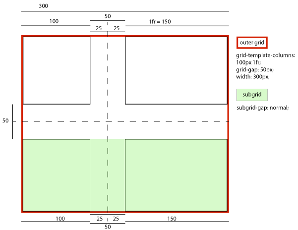
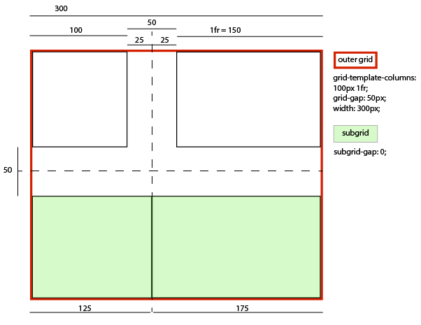
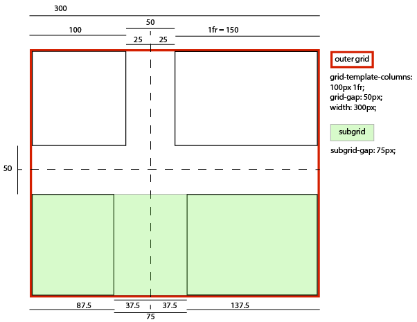

If you notice any inconsistencies between this Grid Layout Module and the Flexible Box Layout Module, please report them to the CSSWG, as this is likely an error.
1. Introduction
This section is not normative.
Grid Layout is a layout model for CSS that has powerful abilities to control the sizing and positioning of boxes and their contents. Unlike Flexible Box Layout, which is single-axis–oriented, Grid Layout is optimized for 2-dimensional layouts: those in which alignment of content is desired in both dimensions.


In addition, due to its ability to explicitly position items in the grid, Grid Layout allows dramatic transformations in visual layout structure without requiring corresponding markup changes. By combining media queries with the CSS properties that control layout of the grid container and its children, authors can adapt their layout to changes in device form factors, orientation, and available space, while preserving a more ideal semantic structuring of their content across presentations.
Although many layouts can be expressed with either Grid or Flexbox, they each have their specialties. Grid enforces 2-dimensional alignment, uses a top-down approach to layout, allows explicit overlapping of items, and has more powerful spanning capabilities. Flexbox focuses on space distribution within an axis, uses a simpler bottom-up approach to layout, can use a content-size–based line-wrapping system to control its secondary axis, and relies on the underlying markup hierarchy to build more complex layouts. It is expected that both will be valuable and complementary tools for CSS authors.
Grid Level 2 adds the subgrid feature: a subgridded axis is one which matches up its grid lines to lines in the element’s parent’s grid, and which derives the sizes of its tracks through this integration with the parent grid.
1.1. Background and Motivation

As websites evolved from simple documents into complex, interactive applications, techniques for document layout, e.g. floats, were not necessarily well suited for application layout. By using a combination of tables, JavaScript, or careful measurements on floated elements, authors discovered workarounds to achieve desired layouts. Layouts that adapted to the available space were often brittle and resulted in counter-intuitive behavior as space became constrained. As an alternative, authors of many web applications opted for a fixed layout that cannot take advantage of changes in the available rendering space on a screen.
The capabilities of grid layout address these problems. It provides a mechanism for authors to divide available space for layout into columns and rows using a set of predictable sizing behaviors. Authors can then precisely position and size the building block elements of their application into the grid areas defined by the intersections of these columns and rows. The following examples illustrate the adaptive capabilities of grid layout, and how it allows a cleaner separation of content and style.
1.1.1. Adapting Layouts to Available Space
Grid layout can be used to intelligently resize elements within a webpage. The adjacent figures represent a game with five major components in the layout: the game title, stats area, game board, score area, and control area. The author’s intent is to divide the space for the game such that:
- The stats area always appears immediately under the game title.
- The game board appears to the right of the stats and title.
- The top of the game title and the game board should always align.
- The bottom of the game board and bottom of the stats area align when the game has reached its minimum height. In all other cases the game board will stretch to take advantage of all the space available to it.
- The controls are centered under the game board.
- The top of the score area is aligned to the top of the controls area.
- The score area is beneath the stats area.
- The score area is aligned to the controls beneath the game board.
The following grid layout example shows how an author might achieve all the sizing, placement, and alignment rules declaratively.
/** * Define the space for each grid item by declaring the grid * on the grid container . */ #grid{ /** * Two columns: * 1. the first sized to content, * 2. the second receives the remaining space * (but is never smaller than the minimum size of the board * or the game controls, which occupy this column [Figure 4]) * * Three rows: * 3. the first sized to content, * 4. the middle row receives the remaining space * (but is never smaller than the minimum height * of the board or stats areas) * 5. the last sized to content. */ display: grid; grid-template-columns : /* 1 */ auto/* 2 */ 1 fr ; grid-template-rows : /* 3 */ auto/* 4 */ 1 fr /* 5 */ auto; } /* Specify the position of each grid item using coordinates on * the 'grid-row' and 'grid-column' properties of each grid item . */ #title{ grid-column : 1 ; grid-row : 1 ; } #score{ grid-column : 1 ; grid-row : 3 ; } #stats{ grid-column : 1 ; grid-row : 2 ; align-self : start; } #board{ grid-column : 2 ; grid-row : 1 / span2 ; } #controls{ grid-column : 2 ; grid-row : 3 ; justify-self : center; }
< div id = "grid" > < div id = "title" > Game Title</ div > < div id = "score" > Score</ div > < div id = "stats" > Stats</ div > < div id = "board" > Board</ div > < div id = "controls" > Controls</ div > </ div >
Note: There are multiple ways to specify the structure of the grid and to position and size grid items, each optimized for different scenarios.
1.1.2. Source-Order Independence


Continuing the prior example, the author also wants the game to adapt to different devices. Also, the game should optimize the placement of the components when viewed either in portrait or landscape orientation (Figures 6 and 7). By combining grid layout with media queries, the author is able to use the same semantic markup, but rearrange the layout of elements independent of their source order, to achieve the desired layout in both orientations.
The following example uses grid layout’s ability to name the space which will be occupied by a grid item. This allows the author to avoid rewriting rules for grid items as the grid’s definition changes.
@media ( orientation: portrait) { #grid{ display : grid; /* The rows, columns and areas of the grid are defined visually * using the grid-template-areas property. Each string is a row, * and each word an area. The number of words in a string * determines the number of columns. Note the number of words * in each string must be identical. */ grid-template-areas:"title stats" "score stats" "board board" "ctrls ctrls" ; /* The way to size columns and rows can be assigned with the * grid-template-columns and grid-template-rows properties. */ grid-template-columns: auto1 fr ; grid-template-rows : auto auto1 fr auto; } } @media ( orientation: landscape) { #grid{ display : grid; /* Again the template property defines areas of the same name, * but this time positioned differently to better suit a * landscape orientation. */ grid-template-areas:"title board" "stats board" "score ctrls" ; grid-template-columns : auto1 fr ; grid-template-rows : auto1 fr auto; } } /* The grid-area property places a grid item into a named * area of the grid. */ #title{ grid-area : title} #score{ grid-area : score} #stats{ grid-area : stats} #board{ grid-area : board} #controls{ grid-area : ctrls}
< div id = "grid" > < div id = "title" > Game Title</ div > < div id = "score" > Score</ div > < div id = "stats" > Stats</ div > < div id = "board" > Board</ div > < div id = "controls" > Controls</ div > </ div >
Note: The reordering capabilities of grid layout intentionally affect only the visual rendering, leaving speech order and navigation based on the source order. This allows authors to manipulate the visual presentation while leaving the source order intact and optimized for non-CSS UAs and for linear models such as speech and sequential navigation.
Grid item placement and reordering must not be used as a substitute for correct source ordering, as that can ruin the accessibility of the document.
1.2. Value Definitions
This specification follows the CSS property definition conventions from [CSS2] using the value definition syntax from [CSS-VALUES-3]. Value types not defined in this specification are defined in CSS Values & Units [CSS-VALUES-3]. Combination with other CSS modules may expand the definitions of these value types.
In addition to the property-specific values listed in their definitions, all properties defined in this specification also accept the CSS-wide keywords as their property value. For readability they have not been repeated explicitly.
2. Overview
This section is not normative.
Grid Layout controls the layout of its content through the use of a grid: an intersecting set of horizontal and vertical lines which create a sizing and positioning coordinate system for the grid container’s contents. Grid Layout features
- fixed, flexible, and content-based track sizing functions
- explicit item placement via forwards (positive) and backwards (negative) numerical grid coordinates, named grid lines, and named grid areas; automatic item placement into empty areas, including reordering with order
- space-sensitive track repetition and automatic addition of rows or columns to accommodate additional content
- control over alignment and spacing with margins, gutters, and the alignment properties
- the ability to overlap content and control layering with z-index
Grid containers can be nested or mixed with flex containers as necessary to create more complex layouts.
2.1. Declaring the Grid
The tracks (rows and columns) of the grid are declared and sized either explicitly through the explicit grid properties or are implicitly created when items are placed outside the explicit grid. The grid shorthand and its sub-properties define the parameters of the grid. § 7 Defining the Grid
-
The following declares a grid with four named areas:
H,A,B, andF. The first column is sized to fit its contents (auto), and the second column takes up the remaining space (1fr). Rows default to auto (content-based) sizing; the last row is given a fixed size of 30px.main { display: grid; grid: "H H " "A B " "F F " 30px / auto 1fr; } -
The following declares a grid with as many rows of at least 5em
as will fit in the height of the grid container (100vh).
The grid has no explicit columns;
instead columns are added as content is added,
the resulting column widths are equalized (1fr).
Since content overflowing to the right won’t print,
an alternate layout for printing adds rows instead.
main { display: grid; grid: repeat(auto-fill, 5em) / auto-flow 1fr; height: 100vh; } @media print { main { grid: auto-flow 1fr / repeat(auto-fill, 5em); } } -
The following declares a grid with 5 evenly-sized columns
and three rows,
with the middle row taking up all remaining space
(and at least enough to fit its contents).
main { display: grid; grid: auto 1fr auto / repeat(5, 1fr); min-height: 100vh; }
2.2. Placing Items
The contents of the grid container are organized into individual grid items (analogous to flex items), which are then assigned to predefined areas in the grid. They can be explicitly placed using coordinates through the grid-placement properties or implicitly placed into empty areas using auto-placement. § 8 Placing Grid Items
grid-area: a; /* Place into named grid area “a” */
grid-area: auto; /* Auto-place into next empty area */
grid-area: 2 / 4; /* Place into row 2, column 4 */
grid-area: 1 / 3 / -1; /* Place into column 3, span all rows */
grid-area: header-start / sidebar-start / footer-end / sidebar-end;
/* Place using named lines */
These are equivalent to the following grid-row + grid-column declarations:
grid-row: a; grid-column: a; grid-row: auto; grid-column: auto; grid-row: 2; grid-column: 4; grid-row: 1 / -1; grid-column: 3; grid-row: header-start / footer-end; grid-column: sidebar-start / sidebar-end;
They can further be decomposed into the grid-row-start/grid-row-end/grid-column-start/grid-column-end longhands, e.g.
grid-area: a; /* Equivalent to grid-row-start: a; grid-column-start: a; grid-row-end: a; grid-column-end: a; */ grid-area: 1 / 3 / -1; /* Equivalent to grid-row-start: 1; grid-column-start: 3; grid-row-end: -1; grid-column-end: auto; */
2.3. Sizing the Grid
Once the grid items have been placed, the sizes of the grid tracks (rows and columns) are calculated, accounting for the sizes of their contents and/or available space as specified in the grid definition.
The resulting sized grid is aligned within the grid container according to the grid container’s align-content and justify-content properties. § 11 Alignment and Spacing
main {
display: grid;
grid: auto-flow auto / repeat(auto-fill, 5em);
min-height: 100vh;
justify-content: space-between;
align-content: safe center;
}
Finally each grid item is sized and aligned within its assigned grid area, as specified by its own sizing [CSS2] and alignment properties [CSS-ALIGN-3].
3. Grid Layout Concepts and Terminology
In grid layout, the content of a grid container is laid out by positioning and aligning it into a grid. The grid is an intersecting set of horizontal and vertical grid lines that divides the grid container’s space into grid areas, into which grid items (representing the grid container’s content) can be placed. There are two sets of grid lines: one set defining columns that run along the block axis, and an orthogonal set defining rows along the inline axis. [CSS3-WRITING-MODES]

3.1. Grid Lines
Grid lines are the horizontal and vertical dividing lines of the grid. A grid line exists on either side of a column or row. They can be referred to by numerical index, or by an author-specified name. A grid item references the grid lines to determine its position within the grid using the grid-placement properties.
This first example demonstrates how an author would position a grid item using grid line numbers:
#grid{ display : grid; grid-template-columns : 150 px 1 fr ; grid-template-rows : 50 px 1 fr 50 px ; } #item1{ grid-column : 2 ; grid-row-start : 1 ; grid-row-end : 4 ; }
This second example uses explicitly named grid lines:
/* equivalent layout to the prior example, but using named lines */ #grid{ display : grid; grid-template-columns : 150 px [ item1-start] 1 fr [ item1-end]; grid-template-rows : [ item1-start] 50 px 1 fr 50 px [ item1-end]; } #item1{ grid-column : item1-start / item1-end; grid-row : item1-start / item1-end; }
3.2. Grid Tracks and Cells
Grid track is a generic term for a grid column or grid row—in other words, it is the space between two adjacent grid lines. Each grid track is assigned a sizing function, which controls how wide or tall the column or row may grow, and thus how far apart its bounding grid lines are. Adjacent grid tracks can be separated by gutters but are otherwise packed tightly.
A grid cell is the intersection of a grid row and a grid column. It is the smallest unit of the grid that can be referenced when positioning grid items.
#grid {
display: grid;
grid-template-columns: 150px 1fr; /* two columns */
grid-template-rows: 50px 1fr 50px; /* three rows */
}
3.3. Grid Areas
A grid area is the logical space used to lay out one or more grid items. A grid area consists of one or more adjacent grid cells. It is bound by four grid lines, one on each side of the grid area, and participates in the sizing of the grid tracks it intersects. A grid area can be named explicitly using the grid-template-areas property of the grid container, or referenced implicitly by its bounding grid lines. A grid item is assigned to a grid area using the grid-placement properties.
/* using the template syntax */
#grid {
display: grid;
grid-template-areas: ". a"
"b a"
". a";
grid-template-columns: 150px 1fr;
grid-template-rows: 50px 1fr 50px;
height: 100vh;
}
#item1 { grid-area: a }
#item2 { grid-area: b }
#item3 { grid-area: b }
/* Align items 2 and 3 at different points in the grid area "b". */
/* By default, grid items are stretched to fit their grid area */
/* and these items would layer one over the other. */
#item2 { align-self: start; }
#item3 { justify-self: end; align-self: end; }
A grid item’s grid area forms the containing block into which it is laid out. Grid items placed into the same grid area do not directly affect each other’s layout. Indirectly, however, a grid item occupying a grid track with an intrinsic sizing function can affect the size of that track (and thus the positions of its bounding grid lines), which in turn can affect the position or size of another grid item.
3.4. Nested vs. Subgridded Items
A grid item can itself be a grid container by giving it display: grid. In the general case the layout of this nested grid’s contents will be independent of the layout of the parent grid it participates in.
However, in some cases it might be necessary for the contents of multiple grid items to align to each other. A nested grid can defer the definition of its rows and/or columns to its parent grid container, making it a subgrid. In this case, the grid items of the subgrid participate in sizing the parent grid, allowing the contents of both grids to align. See § 9 Subgrids.
A subgrid is established by the subgrid keyword of grid-template-rows or grid-template-columns, and can be subgridded in either axis or in both. A grid that has no subgridded axis is a standalone grid.
< ul > < li >< label > Name:</ label > < input name = fn > < li >< label > Address:</ label > < input name = address > < li >< label > Phone:</ label > < input name = phone > </ ul >
We want the labels and inputs to align, and we want to style each list item with a border. This can be accomplished with subgrid layout:
ul {
display: grid;
grid: auto-flow / auto 1fr;
}
li {
grid-column: span 2;
display: grid;
grid-template-columns: subgrid;
border: solid;
}
label {
grid-column: 1;
}
input {
grid-column: 2;
}
4. Reordering and Accessibility
Grid layout gives authors great powers of rearrangement over the document.
However, these are not a substitute for correct ordering of the document source.
The order property and grid placement
do not affect ordering in non-visual media
(such as speech).
Likewise, rearranging grid items visually does not affect
the default traversal order of sequential navigation modes
(such as cycling through links, see e.g. tabindex [HTML]).
Authors must use order and the grid-placement properties only for visual, not logical, reordering of content. Style sheets that use these features to perform logical reordering are non-conforming.
Note: This is so that non-visual media and non-CSS UAs, which typically present content linearly, can rely on a logical source order, while grid layout’s placement and ordering features are used to tailor the visual arrangement. (Since visual perception is two-dimensional and non-linear, the desired visual order is not always equivalent to the desired reading order.)
<!DOCTYPE html> < header > ...</ header > < main > ...</ main > < nav > ...</ nav > < aside > ...</ aside > < footer > ...</ footer >
This layout can be easily achieved with grid layout:
body{ display : grid; grid : "h h h" "a b c" "f f f" ; grid-template-columns : auto1 fr 20 % ; } main{ grid-area : b; min-width : 12 em ; } nav{ grid-area : a; /* auto min-width */ } aside{ grid-area : c; min-width : 12 em ; }
As an added bonus, the columns will all be equal-height by default, and the main content will be as wide as necessary to fill the screen. Additionally, this can then be combined with media queries to switch to an all-vertical layout on narrow screens:
@media all and( max-width:60 em ) { /* Too narrow to support three columns */ body{ display : block; } }
In order to preserve the author’s intended ordering in all presentation modes, authoring tools—including WYSIWYG editors as well as Web-based authoring aids—must reorder the underlying document source and not use order or grid-placement properties to perform reordering unless the author has explicitly indicated that the underlying document order (which determines speech and navigation order) should be out-of-sync with the visual order.
Since most of the time, reordering should affect all screen ranges as well as navigation and speech order, the tool would match the resulting drag-and-drop visual arrangement by simultaneously reordering the DOM layer. In some cases, however, the author may want different visual arrangements per screen size. The tool could offer this functionality by using the grid-placement properties together with media queries, but also tie the smallest screen size’s arrangement to the underlying DOM order (since this is most likely to be a logical linear presentation order) while using grid-placement properties to rearrange the visual presentation in other size ranges.
This tool would be conformant, whereas a tool that only ever used the grid-placement properties to handle drag-and-drop grid rearrangement (however convenient it might be to implement it that way) would be non-conformant.
5. Grid Containers
5.1. Establishing Grid Containers: the grid and inline-grid display values
| Name: | display |
|---|---|
| New values: | grid | inline-grid |
- grid
- This value causes an element to generate a grid container box that is block-level when placed in flow layout.
- inline-grid
- This value causes an element to generate a grid container box that is inline-level when placed in flow layout.
A grid container that is not a subgrid establishes an independent grid formatting context for its contents. This is the same as establishing an independent block formatting context, except that grid layout is used instead of block layout: floats do not intrude into the grid container, and the grid container’s margins do not collapse with the margins of its contents. The contents of a grid container are laid out into a grid, with grid lines forming the boundaries of each grid items’ containing block.
Unlike those of a regular nested grid, a subgrid’s contents participate in its parent grid formatting context; thus a subgrid does not establish an independent formatting context.
Grid containers are not block containers, and so some properties that were designed with the assumption of block layout don’t apply in the context of grid layout. In particular:
- float and clear have no effect on a grid item. However, the float property still affects the computed value of display on children of a grid container, as this occurs before grid items are determined.
- vertical-align has no effect on a grid item.
- the ::first-line and ::first-letter pseudo-elements do not apply to grid containers, and grid containers do not contribute a first formatted line or first letter to their ancestors.
If an element’s specified display is inline-grid and the element is floated or absolutely positioned, the computed value of display is grid. The table in CSS 2.1 Chapter 9.7 is thus amended to contain an additional row, with inline-grid in the "Specified Value" column and grid in the "Computed Value" column.
5.2. Sizing Grid Containers
Note see [CSS-SIZING-3] for a definition of the terms in this section.
A grid container is sized using the rules of the formatting context in which it participates:
- As a block-level box in a block formatting context, it is sized like a block box that establishes a formatting context, with an auto inline size calculated as for non-replaced block boxes.
- As an inline-level box in an inline formatting context, it is sized as an atomic inline-level box (such as an inline-block).
In both inline and block formatting contexts, the grid container’s auto block size is its max-content size.
The block layout spec should probably define this, but it isn’t written yet.
The max-content size (min-content size) of a grid container is the sum of the grid container’s track sizes (including gutters) in the appropriate axis, when the grid is sized under a max-content constraint (min-content constraint).
5.3. Scrollable Grid Overflow
The overflow property applies to grid containers.
Just as it is included in intrinsic sizing (see § 5.2 Sizing Grid Containers), the grid is also included in a grid container’s scrollable overflow region.
Note: Beware the interaction with padding when the grid container is a scroll container: additional padding is defined to be added to the scrollable overflow rectangle as needed to enable place-content: end alignment of scrollable content. See CSS Overflow 3 § 2.2 Scrollable Overflow
5.4. Limiting Large Grids
Since memory is limited, UAs may clamp the possible size of the implicit grid to be within a UA-defined limit (which should accommodate lines in the range [-10000, 10000]), dropping all lines outside that limit. If a grid item is placed outside this limit, its grid area must be clamped to within this limited grid.
To clamp a grid area:
-
If the grid area would span outside the limited grid, its span is clamped to the last line of the limited grid.
-
If the grid area would be placed completely outside the limited grid, its span must be truncated to 1 and the area repositioned into the last grid track on that side of the grid.
.grid-item{ grid-row : 500 /1500 ; grid-column : 2000 /3000 ; }
Would end up being equivalent to:
.grid-item{ grid-row : 500 /1001 ; grid-column : 1000 /1001 ; }
6. Grid Items
Loosely speaking, the grid items of a grid container are boxes representing its in-flow contents.
Each in-flow child of a grid container becomes a grid item, and each child text sequence is wrapped in an anonymous block container grid item. However, if the text sequence contains only white space (i.e. characters that can be affected by the white-space property) it is instead not rendered (just as if its text nodes were display:none).
Examples of grid items:
< div style = "display: grid" > <!-- grid item: block child --> < div id = "item1" > block</ div > <!-- grid item: floated element; floating is ignored --> < div id = "item2" style = "float: left;" > float</ div > <!-- grid item: anonymous block box around inline content --> anonymous item 3<!-- grid item: inline child --> < span > item 4<!-- grid items do not split around blocks --> < q style = "display: block" id = not-an-item > item 4</ q > item 4</ span > </ div >
Note: inter-element white space disappears: it does not become its own grid item, even though inter-element text does get wrapped in an anonymous grid item.
Note: The box of a anonymous item is unstyleable, since there is no element to assign style rules to. Its contents will however inherit styles (such as font settings) from the grid container.
6.1. Grid Item Display
Unless it is a subgrid, a grid item establishes an independent formatting context for its contents. However, grid items are grid-level boxes, not block-level boxes: they participate in their container’s grid formatting context, not in a block formatting context.
If the computed display value of an element’s nearest ancestor element (skipping display:contents ancestors) is grid or inline-grid, the element’s own display value is blockified. (See CSS2.1§9.7 [CSS2] and CSS Display 3 § 2.7 Automatic Box Type Transformations for details on this type of display value conversion.)
Note: Blockification still occurs even when the grid or inline-grid element does not end up generating a grid container box, e.g. when it is replaced or in a display: none subtree.
Note: Some values of display normally trigger the creation of anonymous boxes around the original box. If such a box is a grid item, it is blockified first, and so anonymous box creation will not happen. For example, two contiguous grid items with display: table-cell will become two separate display: block grid items, instead of being wrapped into a single anonymous table.
6.2. Grid Item Sizing
A grid item is sized within the containing block defined by its grid area.
Grid item calculations for automatic sizes in a given dimensions vary by their self-alignment values:
- normal
-
If the grid item has no preferred aspect ratio, and no natural size in the relevant axis (if it is a replaced element), the grid item is sized as for align-self: stretch.
Otherwise, the grid item is sized consistent with the size calculation rules for block-level elements for the corresponding axis. (See CSS 2 § 10 Visual formatting model details.)
- stretch
-
Use the inline size calculation rules for non-replaced boxes (defined in CSS 2 § 10.3.3 Block-level, non-replaced elements in normal flow), i.e. the stretch-fit size.
Note: This can distort the aspect ratio of an item with a preferred aspect ratio, if its size is also constrained in the other axis.
- all other values
-
Size the item as fit-content.
| Alignment | Non-replaced Element Size | Replaced Element Size |
|---|---|---|
| normal | Fill grid area | Use natural size |
| stretch | Fill grid area | Fill grid area |
| start/center/etc. | fit-content sizing (like floats) | Use natural size |
Note: The auto value of min-width and min-height affects track sizing in the relevant axis similar to how it affects the main size of a flex item. See § 6.6 Automatic Minimum Size of Grid Items.
6.3. Reordered Grid Items: the order property
The order property also applies to grid items. It affects their auto-placement and painting order.
As with reordering flex items, the order property must only be used when the visual order needs to be out-of-sync with the speech and navigation order; otherwise the underlying document source should be reordered instead. See CSS Display 3 § 3.1 Reordering and Accessibility in [CSS-DISPLAY-3].
6.4. Grid Item Margins and Paddings
As adjacent grid items are independently contained within the containing block formed by their grid areas, the margins of adjacent grid items do not collapse.
Percentage margins and paddings on grid items, like those on block boxes, are resolved against the inline size of their containing block, e.g. left/right/top/bottom percentages all resolve against their containing block’s width in horizontal writing modes.
Auto margins expand to absorb extra space in the corresponding dimension, and can therefore be used for alignment. See § 11.2 Aligning with auto margins
6.5. Z-axis Ordering: the z-index property
Grid items can overlap when they are positioned into intersecting grid areas, or even when positioned in non-intersecting areas because of negative margins or positioning. The painting order of grid items is exactly the same as inline blocks [CSS2], except that order-modified document order is used in place of raw document order, and z-index values other than auto create a stacking context even if position is static (behaving exactly as if position were relative). Thus the z-index property can easily be used to control the z-axis order of grid items.
Note: Descendants that are positioned outside a grid item still participate in any stacking context established by the grid item.
<style type="text/css">
#grid {
display: grid;
grid-template-columns: 1fr 1fr;
grid-template-rows: 1fr 1fr
}
#A { grid-column: 1 / span 2; grid-row: 2; align-self: end; }
#B { grid-column: 1; grid-row: 1; z-index: 10; }
#C { grid-column: 2; grid-row: 1; align-self: start; margin-left: -20px; }
#D { grid-column: 2; grid-row: 2; justify-self: end; align-self: start; }
#E { grid-column: 1 / span 2; grid-row: 1 / span 2;
z-index: 5; justify-self: center; align-self: center; }
</style>
<div id="grid">
<div id="A">A</div>
<div id="B">B</div>
<div id="C">C</div>
<div id="D">D</div>
<div id="E">E</div>
</div>
6.6. Automatic Minimum Size of Grid Items
Note: Much of the sizing terminology used in this section (and throughout the rest of the specification) is defined in CSS Intrinsic and Extrinsic Sizing [CSS-SIZING-3].
To provide a more reasonable default minimum size for grid items, the used value of its automatic minimum size in a given axis is the content-based minimum size if all of the following are true:
-
its computed overflow is not a scrollable overflow value
-
it spans at least one track in that axis whose min track sizing function is auto
-
if it spans more than one track in that axis, none of those tracks are flexible
Otherwise, the automatic minimum size is zero, as usual.
Note: The content-based minimum size is a type of intrinsic size contribution, and thus the provisions in CSS Sizing 3 § 5.2 Intrinsic Contributions apply.
The content-based minimum size for a grid item in a given dimension is its specified size suggestion if it exists, otherwise its transferred size suggestion if that exists and the element is replaced, else its content size suggestion, see below. However, if in a given dimension the grid item spans only grid tracks that have a fixed max track sizing function, then its specified size suggestion and content size suggestion in that dimension (and its input from this dimension to the transferred size suggestion in the opposite dimension) are further clamped to less than or equal to the stretch fit into the grid area’s maximum size in that dimension, as represented by the sum of those grid tracks’ max track sizing functions plus any intervening fixed gutters.
In all cases, the size suggestion is additionally clamped by the maximum size in the affected axis, if it’s definite. If the item is a compressible replaced element, and has a definite preferred size or maximum size in the relevant axis, the size suggestion is capped by those sizes; for this purpose, any indefinite percentages in these sizes are resolved against zero (and considered definite).
Note: The argument to fit-content() does not clamp the content-based minimum size in the same way as a fixed max track sizing function.
The content size suggestion, specified size suggestion, and transferred size suggestion used in this calculation account for the relevant min/max/preferred size properties so that the content-based minimum size does not interfere with any author-provided constraints, and are defined below:
- specified size suggestion
- If the item’s preferred size in the relevant axis is definite, then the specified size suggestion is that size. It is otherwise undefined.
- transferred size suggestion
-
If the item has a preferred aspect ratio
and its preferred size in the opposite axis is definite,
then the transferred size suggestion is that size
(clamped by the opposite-axis minimum and maximum sizes if they are definite),
converted through the aspect ratio.
It is otherwise undefined.
If the item has a definite preferred size or maximum size in the relevant axis, the transferred size suggestion is capped by those sizes; for this purpose, any indefinite percentages in these sizes are resolved against zero (and considered definite).
- content size suggestion
- The content size suggestion is the min-content size in the relevant axis, clamped, if it has a preferred aspect ratio, by any definite opposite-axis minimum and maximum sizes converted through the aspect ratio.
For the purpose of calculating an intrinsic size of the box (e.g. the box’s min-content size), a content-based minimum size causes the box’s size in that axis to become indefinite (even if e.g. its width property specifies a definite size). Note this means that percentages calculated against this size will behave as auto.
For any purpose other than calculating intrinsic sizes, a content-based minimum size (unlike an explicit min-content/etc minimum size) does not force the box’s size to become indefinite. However, if a percentage resolved against the box’s size before this minimum was applied, it must be re-resolved against the new size after it is applied.
In particular, if grid layout is being used for a major content area of a document, it is better to set an explicit font-relative minimum width such as min-width: 12em. A content-based minimum width could result in a large table or large image stretching the size of the entire content area, potentially into an overflow zone, and thereby making lines of text needlessly long and hard to read.
Note also, when content-based sizing is used on an item with large amounts of content, the layout engine must traverse all of this content before finding its minimum size, whereas if the author sets an explicit minimum, this is not necessary. (For items with small amounts of content, however, this traversal is trivial and therefore not a performance concern.)
7. Defining the Grid
7.1. The Explicit Grid
The three properties grid-template-rows, grid-template-columns, and grid-template-areas together define the explicit grid of a grid container by specifying its explicit grid tracks. The final grid may end up larger due to grid items placed outside the explicit grid; in this case implicit tracks will be created, these implicit tracks will be sized by the grid-auto-rows and grid-auto-columns properties.
The size of the explicit grid is determined by the larger of the number of rows/columns defined by grid-template-areas and the number of rows/columns sized by grid-template-rows/grid-template-columns. Any rows/columns defined by grid-template-areas but not sized by grid-template-rows/grid-template-columns take their size from the grid-auto-rows/grid-auto-columns properties. If these properties don’t define any explicit tracks the explicit grid still contains one grid line in each axis.
Numeric indexes in the grid-placement properties count from the edges of the explicit grid. Positive indexes count from the start side (starting from 1 for the start-most explicit line), while negative indexes count from the end side (starting from -1 for the end-most explicit line).
The grid and grid-template properties are shorthands that can be used to set all three explicit grid properties (grid-template-rows, grid-template-columns, and grid-template-areas) at the same time. The grid shorthand also resets properties controlling the implicit grid, whereas the grid-template property leaves them unchanged.
7.2. Explicit Track Sizing: the grid-template-rows and grid-template-columns properties
| Name: | grid-template-columns, grid-template-rows |
|---|---|
| Value: | none | <track-list> | <auto-track-list> | subgrid <line-name-list>? |
| Initial: | none |
| Applies to: | grid containers |
| Inherited: | no |
| Percentages: | refer to corresponding dimension of the content area |
| Computed value: | the keyword none or a computed track list |
| Canonical order: | per grammar |
| Animation type: | if the list lengths match, by computed value type per item in the computed track list (see § 7.2.5 Computed Value of a Track Listing and § 7.2.3.3 Interpolation/Combination of repeat()); discrete otherwise |
These properties specify, as a space-separated track list, the line names and track sizing functions of the grid. The grid-template-columns property specifies the track list for the grid’s columns, while grid-template-rows specifies the track list for the grid’s rows.
Values have the following meanings:
- none
-
Indicates that no explicit grid tracks are created by this property
(though explicit grid tracks could still be created by grid-template-areas).
Note: In the absence of an explicit grid any rows/columns will be implicitly generated, and their size will be determined by the grid-auto-rows and grid-auto-columns properties.
- <track-list> | <auto-track-list>
- Specifies the track list as a series of track sizing functions and line names. Each track sizing function can be specified as a length, a percentage of the grid container’s size, a measurement of the contents occupying the column or row, or a fraction of the free space in the grid. It can also be specified as a range using the minmax() notation, which can combine any of the previously mentioned mechanisms to specify separate min and max track sizing functions for the column or row.
- subgrid <line-name-list>?
-
The subgrid value
indicates that the grid will adopt the spanned portion
of its parent grid in that axis
(the subgridded axis).
Rather than being specified explicitly,
the sizes of the grid rows/columns
will be taken from the parent grid’s definition,
and the subgrid’s items will participate
in the intrinsic size calculations (CSS Grid Layout 1 § 11.5 Resolve Intrinsic Track Sizes)
of any tracks shared with the parent grid.
Essentially,
subgrids provide the ability to pass grid parameters down through nested elements,
and content-based sizing information back up to their parent grid.
The <line-name-list> argument allows local naming of the grid lines shared with the parent grid: if a <line-name-list> is given, the specified <line-names>s are assigned to the lines of the subgrid’s explicit grid, one per line, starting with line 1. Excess <line-names> are ignored.
If there is no parent grid, or if the grid container is otherwise forced to establish an independent formatting context (for example, due to layout containment [CSS-CONTAIN-2] or absolute positioning [CSS-POSITION-3]), the used value is the initial value, none, and the grid container is not a subgrid.
An axis that is not subgridded is a standalone axis.
The syntax of a track list is:
<track-list> = [ <line-names>? [ <track-size> | <track-repeat> ] ]+ <line-names>?
<auto-track-list> = [ <line-names>? [ <fixed-size> | <fixed-repeat> ] ]* <line-names>? <auto-repeat>
[ <line-names>? [ <fixed-size> | <fixed-repeat> ] ]* <line-names>?
<explicit-track-list> = [ <line-names>? <track-size> ]+ <line-names>?
<line-name-list> = [ <line-names> | <name-repeat> ]+
<track-size> = <track-breadth> | minmax( <inflexible-breadth> , <track-breadth> ) | fit-content( <length-percentage [0,∞]> )
<fixed-size> = <fixed-breadth> | minmax( <fixed-breadth> , <track-breadth> ) | minmax( <inflexible-breadth> , <fixed-breadth> )
<track-breadth> = <length-percentage [0,∞]> | <flex [0,∞]> | min-content | max-content | auto
<inflexible-breadth> = <length-percentage [0,∞]> | min-content | max-content | auto
<fixed-breadth> = <length-percentage [0,∞]>
<line-names> = '[' <custom-ident>* ']'
Where the component values are defined as follows…
7.2.1. Track Sizes
- <length-percentage [0,∞]>
-
A non-negative length or percentage, as defined by CSS3 Values. [CSS-VALUES-3]
<percentage> values are relative to the inner inline size of the grid container in column grid tracks, and the inner block size of the grid container in row grid tracks. If the size of the grid container depends on the size of its tracks, then the <percentage> must be treated as auto, for the purpose of calculating the intrinsic sizes of the grid container and then resolve against that resulting grid container size for the purpose of laying out the grid and its items.
- <flex [0,∞]>
-
A non-negative dimension with the unit fr specifying the track’s flex factor.
Each <flex>-sized track takes a share of the remaining space in proportion to its flex factor.
For example, given a track listing of 1fr 2fr,
the tracks will take up ⅓ and ⅔ of the leftover space, respectively.
See § 7.2.4 Flexible Lengths: the fr unit for more details.
Note: If the sum of the flex factors is less than 1, they’ll take up only a corresponding fraction of the leftover space, rather than expanding to fill the entire thing.
When appearing outside a minmax() notation, implies an automatic minimum (i.e. minmax(auto, <flex>)).
- minmax(min, max)
-
Defines a size range
greater than or equal to min
and less than or equal to max.
If the max is less than the min,
then the max will be floored by the min
(essentially yielding minmax(min, min)).
As a maximum, a <flex> value sets the track’s flex factor;
it is invalid as a minimum.
Note: A future level of this spec may allow <flex> minimums, and will update the track sizing algorithm to account for this correctly
- auto
-
As a maximum: represents the largest max-content contribution
of the grid items occupying the grid track;
however, unlike max-content,
allows expansion of the track
by the align-content and justify-content properties.
As a minimum: represents the largest minimum size (specified by min-width/min-height) of the grid items occupying the grid track. (This initially is often, but not always, equal to a min-content minimum—see § 6.6 Automatic Minimum Size of Grid Items.)
When appearing outside a minmax() notation: equivalent to minmax(auto, auto), representing the range between the minimum and maximum described above. (This behaves similar to minmax(min-content, max-content) in the most basic cases, but with extra abilities.)
- max-content
- Represents the largest max-content contribution of the grid items occupying the grid track.
- min-content
- Represents the largest min-content contribution of the grid items occupying the grid track.
- fit-content( <length-percentage> )
-
Represents the formula
max(minimum, min(limit, max-content)), where minimum represents an auto minimum (which is often, but not always, equal to a min-content minimum), and limit is the track sizing function passed as an argument to fit-content(). This is essentially calculated as the smaller of minmax(auto, max-content) and minmax(auto, limit).
grid-template-columns: 100px 1fr max-content minmax(min-content, 1fr);
Five grid lines are created:
- At the start edge of the grid container.
- 100px from the start edge of the grid container.
- A distance from the previous line equal to half the free space (the width of the grid container, minus the width of the non-flexible grid tracks).
- A distance from the previous line equal to the maximum size of any grid items belonging to the column between these two lines.
- A distance from the previous line at least as large as the largest minimum size of any grid items belonging to the column between these two lines, but no larger than the other half of the free space.
If the non-flexible sizes (100px, max-content, and min-content) sum to larger than the grid container’s width, the final grid line will be a distance equal to their sum away from the start edge of the grid container (the 1fr sizes both resolve to 0). If the sum is less than the grid container’s width, the final grid line will be exactly at the end edge of the grid container. This is true in general whenever there’s at least one <flex> value among the grid track sizes.
/* examples of valid track definitions */ grid-template-rows: 1fr minmax(min-content, 1fr); grid-template-rows: 10px repeat(2, 1fr auto minmax(30%, 1fr)); grid-template-rows: calc(4em - 5px);
Note: The size of the grid is not purely the sum of the track sizes, as row-gap, column-gap and justify-content, align-content can add additional space between tracks.
7.2.2. Naming Grid Lines: the [<custom-ident>*] syntax
While grid lines can always be referred to by their numerical index, line names can make the grid-placement properties easier to understand and maintain. Line names can be explicitly assigned with the grid-template-rows and grid-template-columns properties, or implicitly assigned by named grid areas with the grid-template-areas property.
#grid {
display: grid;
grid-template-columns: [first nav-start] 150px [main-start] 1fr [last];
grid-template-rows: [first header-start] 50px [main-start] 1fr [footer-start] 50px [last];
}

A line name cannot be span or auto, i.e. the <custom-ident> in the <line-names> production excludes the keywords span and auto.
7.2.3. Repeating Rows and Columns: the repeat() notation
The repeat() notation represents a repeated fragment of the track list, allowing a large number of columns or rows that exhibit a recurring pattern to be written in a more compact form.
grid-template-columns: 10px [col-start] 250px [col-end]
10px [col-start] 250px [col-end]
10px [col-start] 250px [col-end]
10px [col-start] 250px [col-end] 10px;
/* same as above, except easier to write */
grid-template-columns: repeat(4, 10px [col-start] 250px [col-end]) 10px;
7.2.3.1. Syntax of repeat()
The generic form of the repeat() syntax is, approximately,
repeat( [ <integer [1,∞]> | auto-fill | auto-fit ] , <track-list> )
The first argument specifies the number of repetitions. The second argument is a track list, which is repeated that number of times. However, there are some restrictions:
-
The repeat() notation can’t be nested.
-
Automatic repetitions (auto-fill or auto-fit) cannot be combined with fully intrinsic or flexible sizes (see grammar).
Thus the precise syntax of the repeat() notation has several forms:
<track-repeat> = repeat( [ <integer [1,∞]> ] , [ <line-names>? <track-size> ]+ <line-names>? ) <auto-repeat> = repeat( [ auto-fill | auto-fit ] , [ <line-names>? <fixed-size> ]+ <line-names>? ) <fixed-repeat> = repeat( [ <integer [1,∞]> ] , [ <line-names>? <fixed-size> ]+ <line-names>? ) <name-repeat> = repeat( [ <integer [1,∞]> | auto-fill ], <line-names>+)
-
The <track-repeat> variant can represent the repetition of any <track-size>, but is limited to a fixed number of repetitions.
-
The <auto-repeat> variant can repeat automatically to fill a space, but requires definite track sizes so that the number of repetitions can be calculated. It can only appear once in the track list, but the same track list can also contain <fixed-repeat>s.
-
The <name-repeat> variant is for adding line names to subgrids. It can only be used with the subgrid keyword and cannot specify track sizes, only line names.
If a repeat() function that is not a <name-repeat> ends up placing two <line-names> adjacent to each other, the name lists are merged. For example, repeat(2, [a] 1fr [b]) is equivalent to [a] 1fr [b a] 1fr [b].
7.2.3.2. Repeat-to-fill: auto-fill and auto-fit repetitions
On a subgridded axis, the auto-fill keyword is only valid once per <line-name-list>, and repeats enough times for the name list to match the subgrid’s specified grid span (falling back to 0 if the span is already fulfilled).
Otherwise on a standalone axis, when auto-fill is given as the repetition number, if the grid container has a definite preferred size or maximum size in the relevant axis, then the number of repetitions is the largest possible positive integer that does not cause the grid to overflow the content box of its grid container taking gap into account; if any number of repetitions would overflow, then 1 repetition. Otherwise, if the grid container has a definite minimum size in the relevant axis, the number of repetitions is the smallest possible positive integer that fulfills that minimum requirement. Otherwise, the specified track list repeats only once.
For this purpose, each track is treated as its max track sizing function if that is definite or else its min track sizing function if that is definite. If both are definite, floor the max track sizing function by the min track sizing function. If neither are definite, the number of repetitions is one.
body {
display: grid;
grid-template-columns: repeat(auto-fill, minmax(25ch, 1fr));
}
The auto-fit keyword behaves the same as auto-fill, except that after grid item placement any empty repeated tracks are collapsed. An empty track is one with no in-flow grid items placed into or spanning across it. (This can result in all tracks being collapsed, if they’re all empty.)
A collapsed grid track is treated as having a fixed track sizing function of 0px, and the gutters on either side of it—including any space allotted through distributed alignment—collapse.
For the purpose of finding the number of auto-repeated tracks in a standalone axis, the UA must floor the track size to a UA-specified value to avoid division by zero. It is suggested that this floor be 1px.
7.2.3.3. Interpolation/Combination of repeat()
If two repeat() notations that have the same first argument (repetition count) and the same number of tracks in their second argument (the track listing), they are combined by combining each component of their computed track lists by computed value (just like combining a top-level track list). They otherwise combine discretely.
7.2.4. Flexible Lengths: the fr unit
A flexible length or <flex> is a dimension with the fr unit, which represents a fraction of the leftover space in the grid container. Tracks sized with fr units are called flexible tracks as they flex in response to leftover space similar to how flex items with a zero base size fill space in a flex container.
The distribution of leftover space occurs after all non-flexible track sizing functions have reached their maximum. The total size of such rows or columns is subtracted from the available space, yielding the leftover space, which is then divided among the flex-sized rows and columns in proportion to their flex factor.
Each column or row’s share of the leftover space can be computed as the column or row’s
<flex> * <leftover space> / <sum of all flex factors>.
<flex> values between 0fr and 1fr have a somewhat special behavior: when the sum of the flex factors is less than 1, they will take up less than 100% of the leftover space.
A track’s <flex> value is effectively a request for some proportion of the leftover space, with 1fr meaning “100% of the leftover space”; then if the tracks in that axis are requesting more than 100% in total, the requests are rebalanced to keep the same ratio but use up exactly 100% of it. However, if the tracks request less than the full amount (such as three tracks that are each .25fr) then they’ll each get exactly what they request (25% of the leftover space to each, with the final 25% left unfilled). See § 12.7 Expand Flexible Tracks for the exact details of how leftover space is distributed.
This pattern is required for continuous behavior as fr values approach zero (which means the tracks wants none of the leftover space). Without this, a 1fr track would take all of the leftover space; but so would a 0.1fr track, and a 0.01fr track, etc., until finally the value is small enough to underflow to zero and the track suddenly takes up none of the leftover space. With this behavior, the track instead gradually takes less of the leftover space as its flex factor shrinks below 1fr, smoothly transitioning to taking none of the leftover space at zero.
Unless this “partial fill” behavior is specifically what’s desired, authors should stick to values ≥ 1; for example, using 1fr and 2fr is usually better than using .33fr and .67fr, as they’re more likely to behave as intended if tracks are added or removed.
When the available space is infinite (which happens when the grid container’s width or height is indefinite), flex-sized grid tracks are sized to their contents while retaining their respective proportions. The used size of each flex-sized grid track is computed by determining the max-content size of each flex-sized grid track and dividing that size by the respective flex factor to determine a “hypothetical 1fr size”. The maximum of those is used as the resolved 1fr length (the flex fraction), which is then multiplied by each grid track’s flex factor to determine its final size.
Note: <flex> values are not <length>s (nor are they compatible with <length>s, like some <percentage> values), so they cannot be represented in or combined with other unit types in calc() expressions.
7.2.5. Computed Value of a Track Listing
The computed track list of a non-subgrid axis is a list alternating between line name sets and track sections, with the first and last items being line name sets.
A line name set is a (potentially empty) set of identifiers representing line names.
A track section is either:
-
a minmax() functional notation representing a single track’s size, with each <length-percentage> computed (a computed track size)
-
a repeat() functional notation representing a repeated track list section, with its <integer> computed and its <track-list> represented as a computed track list (a computed repeat notation)
The computed track list of a subgrid axis is the subgrid keyword followed by a list of line name sets and computed repeat notations representing the line names specified for that axis.
7.2.6. Resolved Value of a Track Listing
The grid-template-rows and grid-template-columns properties are resolved value special case properties. [CSSOM]
7.2.6.1. Resolved Value of a Standalone Track Listing
When an element generates a grid container box, the resolved value of its grid-template-rows or grid-template-columns property in a standalone axis is the used value, serialized with:
- Every track listed individually, whether implicitly or explicitly created, without using the repeat() notation.
- Every track size given as a length in pixels, regardless of sizing function.
- Adjacent line names collapsed into a single bracketed set.
const s= getComputedStyle( gridEl); gridEl. style. gridTemplateRows= s. gridTemplateRows; // Code like this should be a no-op, // but if there are any implicit rows, // this will convert them into explicit rows, // possibly changing how grid items are positioned // and altering the overall size of the grid!
This is an accidental property of an early implementation that leaked into later implementations without much thought given to it. We intend to remove it from the spec, but not until after we’ve defined a CSSOM API for getting information about implicit tracks, as currently this is the only way to get that information and a number of pages rely on that.
Otherwise, (e.g. when the element has display: none or is not a grid container) the resolved value is simply the computed value.
< style > # grid { width : 500 px ; grid-template-columns : [ a ] auto [ b ] minmax ( min -content , 1 fr ) [ b c d ] repeat ( 2 , [e ]40 px ) repeat ( 5 , auto ); } </ style > < div id = "grid" > < div style = "grid-column-start: 1; width: 50px" ></ div > < div style = "grid-column-start: 9; width: 50px" ></ div > </ div > < script > var gridElement= document. getElementById( "grid" ); getComputedStyle( gridElement). gridTemplateColumns; // [a] 50px [b] 320px [b c d e] 40px [e] 40px 0px 0px 0px 0px 50px </ script >
Note: In general, resolved values are the computed values, except for a small list of legacy 2.1 properties. However, compatibility with early implementations of this module requires us to define grid-template-rows and grid-template-columns as returning used values.
The CSS Working Group is considering whether to also return used values for the grid-placement properties and is looking for feedback, especially from implementors. See discussion.
7.2.6.2. Resolved Value of a Subgridded Track Listing
When an element generates a grid container box that is a subgrid, the resolved value of the grid-template-rows and grid-template-columns properties represents the used number of columns, serialized as the subgrid keyword followed by a list representing each of its lines as a line name set of all the line’s names explicitly defined on the subgrid (not including those adopted from the parent grid), without using the repeat() notation.
specified : subgrid[ a] repeat ( auto-fill, [ b]) [ c] resolved: subgrid[ a] [ b] [ b] [ b] [ c]
specified : subgrid[ a] [ a] [ a] [ a] repeat ( auto-fill, [ b]) [ c] [ c] resolved: subgrid[ a] [ a] [ a] [ a] [ c]
specified : subgrid[] [ a] resolved: subgrid[] [ a] [] [] []
specified : subgrid[ a] [ b] [ c] [ d] [ e] [ f] resolved: subgrid[ a] [ b] [ c] [ d] [ e]
Note: This violates the general "shortest equivalent serialization" principle by serializing empty trailing line name sets, as the trailing line name sets provide potentially-useful information about how many tracks the subgrid is spanning.
7.3. Named Areas: the grid-template-areas property
| Name: | grid-template-areas |
|---|---|
| Value: | none | <string>+ |
| Initial: | none |
| Applies to: | grid containers |
| Inherited: | no |
| Percentages: | n/a |
| Computed value: | the keyword none or a list of string values |
| Canonical order: | per grammar |
| Animation type: | discrete |
This property specifies named grid areas, which are not associated with any particular grid item, but can be referenced from the grid-placement properties. The syntax of the grid-template-areas property also provides a visualization of the structure of the grid, making the overall layout of the grid container easier to understand.
Values have the following meanings:
- none
-
Indicates that no named grid areas,
and likewise no explicit grid tracks,
are defined by this property
(though explicit grid tracks could still be created by grid-template-columns or grid-template-rows).
Note: In the absence of an explicit grid any rows/columns will be implicitly generated, and their size will be determined by the grid-auto-rows and grid-auto-columns properties.
- <string>+
-
A row is created for every separate string listed for the grid-template-areas property,
and a column is created for each cell in the string,
when parsed as follows:
Tokenize the string into a list of the following tokens, using longest-match semantics:
- A sequence of ident code points, representing a named cell token with a name consisting of its code points.
- A sequence of one or more "." (U+002E FULL STOP), representing a null cell token.
- A sequence of whitespace, representing nothing (do not produce a token).
- A sequence of any other characters, representing a trash token.
Note: These rules can produce cell names that do not match the <ident> syntax, such as "1st 2nd 3rd", which requires escaping when referencing those areas by name in other properties, like grid-row: \31st; to reference the area named 1st.
- A null cell token represents an unnamed area in the grid container.
- A named cell token creates a named grid area with the same name. Multiple named cell tokens within and between rows create a single named grid area that spans the corresponding grid cells.
- A trash token is a syntax error, and makes the declaration invalid.
All strings must define the same number of cell tokens (named cell tokens and/or null cell tokens), and at least one cell token, or else the declaration is invalid. If a named grid area spans multiple grid cells, but those cells do not form a single filled-in rectangle, the declaration is invalid.
Note: Non-rectangular or disconnected regions may be permitted in a future version of this module.
head),
navigational content (nav),
footer content (foot),
and main content (main).
Accordingly, the template creates three rows and two columns,
with four named grid areas.
The head area spans both columns and the first row of the grid.
#grid {
display: grid;
grid-template-areas: "head head"
"nav main"
"foot ...."
}
#grid > header { grid-area: head; }
#grid > nav { grid-area: nav; }
#grid > main { grid-area: main; }
#grid > footer { grid-area: foot; }
7.3.1. Serialization Of Template Strings
When serializing either the specified or computed value of a <string> value of grid-template-areas, each null cell token is serialized as a single "." (U+002E FULL STOP), and consecutive cell tokens are separated by a single space (U+0020 SPACE), with all other white space elided.
7.3.2. Implicitly-Assigned Line Names
The grid-template-areas property generates implicitly-assigned line names from the named grid areas in the template. For each named grid area foo, four implicitly-assigned line names are created: two named foo-start, naming the row-start and column-start lines of the named grid area, and two named foo-end, naming the row-end and column-end lines of the named grid area.
These implicitly-assigned line names behave just like any other line names, except that they do not appear in the value of grid-template-rows/grid-template-columns. Even if an explicitly-assigned line name with the same name is defined, the implicitly-assigned line names are just more lines with the same name.
7.3.3. Implicitly-Named Areas
Since a named grid area is referenced by the implicitly-assigned line names it produces, explicitly adding named lines of the same form (foo-start/foo-end) effectively creates a named grid area. Such implicitly-named areas do not appear in the value of grid-template-areas, but can still be referenced by the grid-placement properties.
7.4. Explicit Grid Shorthand: the grid-template property
| Name: | grid-template |
|---|---|
| Value: | none | [ <'grid-template-rows'> / <'grid-template-columns'> ] | [ <line-names>? <string> <track-size>? <line-names>? ]+ [ / <explicit-track-list> ]? |
| Initial: | none |
| Applies to: | grid containers |
| Inherited: | see individual properties |
| Percentages: | see individual properties |
| Computed value: | see individual properties |
| Animation type: | see individual properties |
| Canonical order: | per grammar |
The grid-template property is a shorthand for setting grid-template-columns, grid-template-rows, and grid-template-areas in a single declaration. It has several distinct syntax forms:
- none
- Sets all three properties to their initial values (none).
- <'grid-template-rows'> / <'grid-template-columns'>
- Sets grid-template-rows and grid-template-columns to the specified values, respectively, and sets grid-template-areas to none.
- [ <line-names>? <string> <track-size>? <line-names>? ]+ [ / <explicit-track-list> ]?
-
-
Sets grid-template-areas to the strings listed.
-
Sets grid-template-rows to the <track-size>s following each string (filling in auto for any missing sizes), and splicing in the named lines defined before/after each size.
-
Sets grid-template-columns to the track listing specified after the slash (or none, if not specified).
This syntax allows the author to align track names and sizes inline with their respective grid areas.
grid-template: [header-top] "a a a" [header-bottom] [main-top] "b b b" 1fr [main-bottom] / auto 1fr auto;is equivalent to
grid-template-areas: "a a a" "b b b"; grid-template-rows: [header-top] auto [header-bottom main-top] 1fr [main-bottom]; grid-template-columns: auto 1fr auto;and creates the following grid:
The grid created by the declarations above. (The “a/b-start/end” names are implicitly assigned by the named grid areas.) Note: Note that the repeat() function isn’t allowed in these track listings, as the tracks are intended to visually line up one-to-one with the rows/columns in the “ASCII art”.
-
Note: The grid shorthand accepts the same syntax, but also resets the implicit grid properties to their initial values. Unless authors want those to cascade in separately, it is therefore recommended to use grid instead of grid-template.
7.5. The Implicit Grid
The grid-template-rows, grid-template-columns, and grid-template-areas properties define a fixed number of tracks that form the explicit grid. When grid items are positioned outside of these bounds, the grid container generates implicit grid tracks by adding implicit grid lines to the grid. These lines together with the explicit grid form the implicit grid. The grid-auto-rows and grid-auto-columns properties size these implicit grid tracks, as well as any explicit grid tracks created by grid-template-areas but not explicitly sized by grid-template-rows or grid-template-columns
The grid-auto-flow property controls auto-placement of grid items without an explicit position. Once the explicit grid is filled (or if there is no explicit grid) auto-placement will also cause the generation of implicit grid tracks.
The grid shorthand property can set the implicit grid properties (grid-auto-flow, grid-auto-rows, and grid-auto-columns) together with the explicit grid properties in a single declaration.
7.6. Implicit Track Sizing: the grid-auto-rows and grid-auto-columns properties
| Name: | grid-auto-columns, grid-auto-rows |
|---|---|
| Value: | <track-size>+ |
| Initial: | auto |
| Applies to: | grid containers |
| Inherited: | no |
| Percentages: | see Track Sizing |
| Computed value: | see Track Sizing |
| Canonical order: | per grammar |
| Animation type: | if the list lengths match, by computed value type per item; discrete otherwise |
The grid-auto-columns and grid-auto-rows properties specify the size of tracks not assigned a size by grid-template-rows or grid-template-columns. If multiple track sizes are given, the pattern is repeated as necessary to find the size of the affected tracks. The first track after the last explicitly-sized track receives the first specified size, and so on forwards; and the last implicit grid track before the explicit grid receives the last specified size, and so on backwards.
Note: If a grid item is positioned into a row or column that is not explicitly declared by grid-template-rows/grid-template-columns and/or grid-template-areas, implicit grid tracks are created to hold it. This can happen either by explicitly positioning into a row or column that is out of range, or by the auto-placement algorithm creating additional rows or columns.
< style > # grid { display : grid ; grid-template-columns : 20 px ; grid-auto-columns : 40 px ; grid-template-rows : 20 px ; grid-auto-rows : 40 px ; } # A { grid-column : 1 ; grid-row : 1 ; } # B { grid-column : 2 ; grid-row : 1 ; } # C { grid-column : 1 ; grid-row : 2 ; } # D { grid-column : 2 ; grid-row : 2 ; } </ style > < div id = "grid" > < div id = "A" > A</ div > < div id = "B" > B</ div > < div id = "C" > C</ div > < div id = "D" > D</ div > </ div >

7.7. Automatic Placement: the grid-auto-flow property
| Name: | grid-auto-flow |
|---|---|
| Value: | [ row | column ] || dense |
| Initial: | row |
| Applies to: | grid containers |
| Inherited: | no |
| Percentages: | n/a |
| Computed value: | specified keyword(s) |
| Canonical order: | per grammar |
| Animation type: | discrete |
Grid items that aren’t explicitly placed are automatically placed into an unoccupied space in the grid container by the auto-placement algorithm. grid-auto-flow controls how the auto-placement algorithm works, specifying exactly how auto-placed items get flowed into the grid. See § 8.5 Grid Item Placement Algorithm for details on precisely how the auto-placement algorithm works.
- row
- The auto-placement algorithm places items by filling each row in turn, adding new rows as necessary. If neither row nor column is provided, row is assumed.
- column
- The auto-placement algorithm places items by filling each column in turn, adding new columns as necessary.
- dense
-
If specified, the auto-placement algorithm uses a “dense” packing algorithm,
which attempts to fill in holes earlier in the grid if smaller items come up later.
This may cause items to appear out-of-order,
when doing so would fill in holes left by larger items.
If omitted, a “sparse” algorithm is used, where the placement algorithm only ever moves “forward” in the grid when placing items, never backtracking to fill holes. This ensures that all of the auto-placed items appear “in order”, even if this leaves holes that could have been filled by later items.
Note: A future level of this module is expected to add a value that flows auto-positioned items together into a single “default” cell.
Auto-placement takes grid items in order-modified document order.

A form arranged using automatic placement.
<style type="text/css">
form {
display: grid;
/* Define three columns, all content-sized,
and name the corresponding lines. */
grid-template-columns: [labels] auto [controls] auto [oversized] auto;
grid-auto-flow: row dense;
}
form > label {
/* Place all labels in the "labels" column and
automatically find the next available row. */
grid-column: labels;
grid-row: auto;
}
form > input, form > select {
/* Place all controls in the "controls" column and
automatically find the next available row. */
grid-column: controls;
grid-row: auto;
}
#department-block {
/* Auto place this item in the "oversized" column
in the first row where an area that spans three rows
won't overlap other explicitly placed items or areas
or any items automatically placed prior to this area. */
grid-column: oversized;
grid-row: span 3;
}
/* Place all the buttons of the form
in the explicitly defined grid area. */
#buttons {
grid-row: auto;
/* Ensure the button area spans the entire grid element
in the inline axis. */
grid-column: 1 / -1;
text-align: end;
}
</style>
<form>
<label for="firstname">First name:</label>
<input type="text" id="firstname" name="firstname">
<label for="lastname">Last name:</label>
<input type="text" id="lastname" name="lastname">
<label for="address">Address:</label>
<input type="text" id="address" name="address">
<label for="address2">Address 2:</label>
<input type="text" id="address2" name="address2">
<label for="city">City:</label>
<input type="text" id="city" name="city">
<label for="state">State:</label>
<select type="text" id="state" name="state">
<option value="WA">Washington</option>
</select>
<label for="zip">Zip:</label>
<input type="text" id="zip" name="zip">
<div id="department-block">
<label for="department">Department:</label>
<select id="department" name="department" multiple>
<option value="finance">Finance</option>
<option value="humanresources">Human Resources</option>
<option value="marketing">Marketing</option>
</select>
</div>
<div id="buttons">
<button id="cancel">Cancel</button>
<button id="back">Back</button>
<button id="next">Next</button>
</div>
</form>
7.8. Grid Definition Shorthand: the grid property
| Name: | grid |
|---|---|
| Value: | <'grid-template'> | <'grid-template-rows'> / [ auto-flow && dense? ] <'grid-auto-columns'>? | [ auto-flow && dense? ] <'grid-auto-rows'>? / <'grid-template-columns'> |
| Initial: | none |
| Applies to: | grid containers |
| Inherited: | see individual properties |
| Percentages: | see individual properties |
| Computed value: | see individual properties |
| Animation type: | see individual properties |
| Canonical order: | per grammar |
The grid property is a shorthand that sets all of the explicit grid properties (grid-template-rows, grid-template-columns, and grid-template-areas), and all the implicit grid properties (grid-auto-rows, grid-auto-columns, and grid-auto-flow), in a single declaration. (It does not reset the gutter properties.)
Its syntax matches grid-template, plus an additional syntax form for defining auto-flow grids:
- <'grid-template'>
- Sets the grid-template longhands as as for grid-template, and the grid-auto-* longhands to their initial values.
- <'grid-template-rows'> / [ auto-flow && dense? ] <'grid-auto-columns'>?
- [ auto-flow && dense? ] <'grid-auto-rows'>? / <'grid-template-columns'>
-
Sets up auto-flow,
by setting the tracks in one axis explicitly
(setting either grid-template-rows or grid-template-columns as specified,
and setting the other to none),
and specifying how to auto-repeat the tracks in the other axis
(setting either grid-auto-rows or grid-auto-columns as specified,
and setting the other to auto).
grid-auto-flow is also set to either row or column accordingly,
with dense if it’s specified.
All other grid sub-properties are reset to their initial values.
Note: Note that you can only specify the explicit or the implicit grid properties in a single grid declaration. The sub-properties you don’t specify are set to their initial value, as normal for shorthands.
grid-template: none / 100px; grid-auto-flow: row; grid-auto-rows: 1fr; grid-auto-columns: auto;
Similarly, grid: none / auto-flow 1fr is equivalent to
grid-template: none; grid-auto-flow: column; grid-auto-rows: auto; grid-auto-columns: 1fr;
When serializing, if all the grid-auto-* longhands have their initial values, the grid-template syntax is used.
8. Placing Grid Items
Every grid item is associated with a grid area, a rectangular set of adjacent grid cells that the grid item occupies. This grid area defines the containing block for the grid item within which the self-alignment properties (justify-self and align-self) determine their actual position. The cells that a grid item occupies also influence the sizing of the grid’s rows and columns, defined in § 12 Grid Layout Algorithm.
The location of a grid item’s grid area within the grid is defined by its placement, which consists of a grid position and a grid span:
- grid position
- The grid item’s location in the grid in each axis. A grid position can be either definite (explicitly specified) or automatic (determined by auto-placement).
- grid span
-
How many grid tracks the grid item occupies in each axis.
The grid span in an axis can be implicit, explicit, or automatic:
-
If both the *-start and *-end values of its grid-placement properties specify a line, its grid span is implicit.
-
If it has an explicit span value, its grid span is explicit.
-
Otherwise, its grid span is automatic: if it is subgridded in that axis, its grid span is determined from its <line-name-list>; otherwise its grid span is 1.
-
The grid-placement properties—the longhands grid-row-start, grid-row-end, grid-column-start, grid-column-end, and their shorthands grid-row, grid-column, and grid-area—allow the author to specify a grid item’s placement by providing any (or none) of the following six pieces of information:
| Row | Column | |
|---|---|---|
| Start | row-start line | column-start line |
| End | row-end line | column-end line |
| Span | row span | column span |
A definite value for any two of Start, End, and Span in a given dimension implies a definite value for the third.
8.1. Common Patterns for Grid Placement
This section is informative.
The grid-placement property longhands are organized into three shorthands:
| grid-area | |||
| grid-column | grid-row | ||
| grid-column-start | grid-column-end | grid-row-start | grid-row-end |
8.1.1. Named Areas
An item can be placed into a named grid area (such as those produced by the template in grid-template-areas) by specifying the area’s name in grid-area:
An item can also be partially aligned with a named grid area, with other edges aligned to some other line:
.one {
grid-row-start: main;
/* Align the row-start edge to the start edge of the "main" named area. */
}
8.1.2. Numeric Indexes and Spans
Grid items can be positioned and sized by number, which is particularly helpful for script-driven layouts:
.two {
grid-row: 2; /* Place item in the second row. */
grid-column: 3; /* Place item in the third column. */
/* Equivalent to grid-area: 2 / 3; */
}
By default, a grid item has a span of 1. Different spans can be given explicitly:
.three {
grid-row: 2 / span 5;
/* Starts in the 2nd row,
spans 5 rows down (ending in the 7th row). */
}
.four {
grid-row: span 5 / 7;
/* Ends in the 7th row,
spans 5 rows up (starting in the 2nd row). */
}
Note: Note that grid indexes are writing mode relative. For example, in a right-to-left language like Arabic, the first column is the rightmost column.
8.1.3. Named Lines and Spans
Instead of counting lines by number, lines can be referenced by their line name:
Note: Note that if a named grid area has the same name as a line name, the placement algorithm will prefer to use named grid area’s lines instead.
If there are multiple lines of the same name, they effectively establish a named set of grid lines, which can be exclusively indexed by filtering the placement by name:
.six {
grid-row: text 5 / text 7;
/* Span between the 5th and 7th lines named "text". */
grid-row: text 5 / span text 2;
/* Same as above - start at the 5th line named "text",
then span across two more "text" lines, to the 7th. */
}
8.1.4. Auto Placement
A grid item can be automatically placed into the next available empty grid cell, growing the grid if there’s no space left.
This can be used, for example, to list a number of sale items on a catalog site in a grid pattern.
Auto-placement can be combined with an explicit span, if the item should take up more than one cell:
Whether the auto-placement algorithm searches across and adds rows, or searches across and adds columns, is controlled by the grid-auto-flow property.
Note: By default, the auto-placement algorithm looks linearly through the grid without backtracking; if it has to skip some empty spaces to place a larger item, it will not return to fill those spaces. To change this behavior, specify the dense keyword in grid-auto-flow.
8.2. Grid Item Placement vs. Source Order
“With great power comes great responsibility.”
The abilities of the grid-placement properties allow content to be freely arranged and reordered within the grid, such that the visual presentation can be largely disjoint from the underlying document source order. These abilities allow the author great freedom in tailoring the rendering to different devices and modes of presentation e.g. using media queries. However they are not a substitute for correct source ordering.
Correct source order is important for speech, for sequential navigation (such as keyboard navigation), and non-CSS UAs such as search engines, tactile browsers, etc. Grid placement only affects the visual presentation! This allows authors to optimize the document source for non-CSS/non-visual interaction modes, and use grid placement techniques to further manipulate the visual presentation so as to leave that source order intact.
8.3. Line-based Placement: the grid-row-start, grid-column-start, grid-row-end, and grid-column-end properties
| Name: | grid-row-start, grid-column-start, grid-row-end, grid-column-end |
|---|---|
| Value: | <grid-line> |
| Initial: | auto |
| Applies to: | grid items and absolutely-positioned boxes whose containing block is a grid container |
| Inherited: | no |
| Percentages: | n/a |
| Computed value: | specified keyword, identifier, and/or integer |
| Canonical order: | per grammar |
| Animation type: | discrete |
<grid-line> = auto | <custom-ident> | [ [ <integer [-∞,-1]> | <integer [1,∞]> ] && <custom-ident>? ] | [ span && [ <integer [1,∞]> || <custom-ident> ] ]
The grid-row-start, grid-column-start, grid-row-end, and grid-column-end properties determine a grid item’s size and location within the grid by contributing a line, a span, or nothing (automatic) to its grid placement, thereby specifying the inline-start, block-start, inline-end, and block-end edges of its grid area.
Values have the following meanings:
- <custom-ident>
-
First attempt to match the grid area’s edge to a named grid area:
if there is a grid line whose line name is <custom-ident>-start (for grid-*-start) / <custom-ident>-end (for grid-*-end),
contributes the first such line to the grid item’s placement.
Note: Named grid areas automatically generate implicitly-assigned line names of this form, so specifying grid-row-start: foo will choose the start edge of that named grid area (unless another line named foo-start was explicitly specified before it).
Otherwise, treat this as if the integer 1 had been specified along with the <custom-ident>.
- [ <integer [-∞,-1]> | <integer [1,∞]> ] && <custom-ident>?
-
Contributes the Nth grid line to the grid item’s placement.
If a negative integer is given,
it instead counts in reverse,
starting from the end edge of the explicit grid.
If a name is given as a <custom-ident>, only lines with that name are counted. If not enough lines with that name exist, all implicit grid lines are assumed to have that name for the purpose of finding this position.
An <integer> value of zero makes the declaration invalid.
- span && [ <integer [1,∞]> || <custom-ident> ]
-
Contributes a grid span to the grid item’s placement
such that the corresponding edge of the grid item’s grid area is N lines from its opposite edge
in the corresponding direction.
For example, grid-column-end: span 2 indicates the second grid line in the endward direction
from the grid-column-start line.
If a name is given as a <custom-ident>, only lines with that name are counted. If not enough lines with that name exist, all implicit grid lines on the side of the explicit grid corresponding to the search direction are assumed to have that name for the purpose of counting this span.
For example, given the following declarations:.grid
{ grid-template-columns : 100 px ; } .griditem{ grid-column : span foo /4 ; } The grid container has an explicit grid with two grid lines, numbered 1 and 2. The grid item’s column-end edge is specified to be at line 4, so two lines are generated in the endward side of the implicit grid.
Its column-start edge must be the first "foo" line it can find startward of that. There is no "foo" line in the grid, though, so the only possibility is a line in the implicit grid. Line 3 is not a candidate, because it’s on the endward side of the explicit grid, while the grid-column-start span forces it to search startward. So, the only option is for the implicit grid to generate a line on the startward side of the explicit grid.

An illustration of the result. If the <integer> is omitted, it defaults to 1. Negative integers or zero are invalid.
- auto
- The property contributes nothing to the grid item’s placement, indicating auto-placement or a default span of one. (See § 8 Placing Grid Items, above.)
In all the above productions, the <custom-ident> additionally excludes the keywords span and auto.
1 2 3 4 5 6 7 8 9 +--+--+--+--+--+--+--+--+ | | | | | | | | | A B C A B C A B C | | | | | | | | | +--+--+--+--+--+--+--+--+
The following declarations place the grid item between the lines indicated by index:
grid-column-start: 4; grid-column-end: auto; /* Line 4 to line 5 */ grid-column-start: auto; grid-column-end: 6; /* Line 5 to line 6 */ grid-column-start: C; grid-column-end: C -1; /* Line 3 to line 9 */ grid-column-start: C; grid-column-end: span C; /* Line 3 to line 6 */ grid-column-start: span C; grid-column-end: C -1; /* Line 6 to line 9 */ grid-column-start: span C; grid-column-end: span C; /* Error: The end span is ignored, and an auto-placed item can't span to a named line. Equivalent to ''grid-column: span 1;''. */ grid-column-start: 5; grid-column-end: C -1; /* Line 5 to line 9 */ grid-column-start: 5; grid-column-end: span C; /* Line 5 to line 6 */ grid-column-start: 8; grid-column-end: 8; /* Error: line 8 to line 9 */ grid-column-start: B 2; grid-column-end: span 1; /* Line 5 to line 6 */
8.3.1. Grid Placement Conflict Handling
If the placement for a grid item contains two lines, and the start line is further end-ward than the end line, swap the two lines. If the start line is equal to the end line, remove the end line.
If the placement contains two spans, remove the one contributed by the end grid-placement property.
If the placement contains only a span for a named line, replace it with a span of 1.
8.4. Placement Shorthands: the grid-column, grid-row, and grid-area properties
| Name: | grid-row, grid-column |
|---|---|
| Value: | <grid-line> [ / <grid-line> ]? |
| Initial: | auto |
| Applies to: | grid items and absolutely-positioned boxes whose containing block is a grid container |
| Inherited: | no |
| Percentages: | N/A |
| Computed value: | see individual properties |
| Animation type: | discrete |
| Canonical order: | per grammar |
The grid-row and grid-column properties are shorthands for grid-row-start/grid-row-end and grid-column-start/grid-column-end, respectively.
If two <grid-line> values are specified, the grid-row-start/grid-column-start longhand is set to the value before the slash, and the grid-row-end/grid-column-end longhand is set to the value after the slash.
When the second value is omitted, if the first value is a <custom-ident>, the grid-row-end/grid-column-end longhand is also set to that <custom-ident>; otherwise, it is set to auto.
| Name: | grid-area |
|---|---|
| Value: | <grid-line> [ / <grid-line> ]{0,3} |
| Initial: | auto |
| Applies to: | grid items and absolutely-positioned boxes whose containing block is a grid container |
| Inherited: | no |
| Percentages: | N/A |
| Computed value: | see individual properties |
| Animation type: | discrete |
| Canonical order: | per grammar |
The grid-area property is a shorthand for grid-row-start, grid-column-start, grid-row-end and grid-column-end.
If four <grid-line> values are specified, grid-row-start is set to the first value, grid-column-start is set to the second value, grid-row-end is set to the third value, and grid-column-end is set to the fourth value.
When grid-column-end is omitted, if grid-column-start is a <custom-ident>, grid-column-end is set to that <custom-ident>; otherwise, it is set to auto.
When grid-row-end is omitted, if grid-row-start is a <custom-ident>, grid-row-end is set to that <custom-ident>; otherwise, it is set to auto.
When grid-column-start is omitted, if grid-row-start is a <custom-ident>, all four longhands are set to that value. Otherwise, it is set to auto.
Note: The resolution order for this shorthand is row-start/column-start/row-end/column-end, which goes CCW for LTR pages, the opposite direction of the related 4-edge properties using physical directions, like margin.
8.5. Grid Item Placement Algorithm
The following grid item placement algorithm resolves automatic positions of grid items into definite positions, ensuring that every grid item has a well-defined grid area to lay out into. (Grid spans need no special resolution; if they’re not explicitly specified, they default to 1.)
Note: This algorithm can result in the creation of new rows or columns in the implicit grid, if there is no room in the explicit grid to place an auto-positioned grid item.
Every grid cell (in both the explicit and implicit grids) can be occupied or unoccupied. A cell is occupied if it’s covered by the grid area of a grid item with a definite grid position; otherwise, the cell is unoccupied. A cell’s occupied/unoccupied status can change during this algorithm.
To aid in clarity, this algorithm is written with the assumption that grid-auto-flow has row specified. If it is instead set to column, swap all mentions of rows and columns, inline and block, etc. in this algorithm.
Note: The auto-placement algorithm works with the grid items in order-modified document order, not their original document order.
-
Generate anonymous grid items as described in § 6 Grid Items. (Anonymous grid items are always auto-placed, since their boxes can’t have any grid-placement properties specified.)
-
Position anything that’s not auto-positioned.
-
Process the items locked to a given row.
For each grid item with a definite row position (that is, the grid-row-start and grid-row-end properties define a definite grid position), in order-modified document order:
- “sparse” packing (default behavior)
-
Set the column-start line of its placement to the earliest (smallest positive index) line index that ensures this item’s grid area will not overlap any occupied grid cells and that is past any grid items previously placed in this row by this step.
- “dense” packing (dense specified)
-
Set the column-start line of its placement to the earliest (smallest positive index) line index that ensures this item’s grid area will not overlap any occupied grid cells.
-
Determine the columns in the implicit grid.
Create columns in the implicit grid:
-
Start with the columns from the explicit grid.
-
Among all the items with a definite column position (explicitly positioned items, items positioned in the previous step, and items not yet positioned but with a definite column) add columns to the beginning and end of the implicit grid as necessary to accommodate those items.
-
If the largest column span among all the items without a definite column position is larger than the width of the implicit grid, add columns to the end of the implicit grid to accommodate that column span.
For example, in the following style fragment:#grid { display: grid; grid-template-columns: repeat(5, 100px); grid-auto-flow: row; } #grid-item { grid-column: 4 / span 3; }The number of columns needed is 6. The explicit grid provides 5 columns (from grid-template-columns) with lines number 1 through 6, but
#grid-item’s column position means it ends on line 7, which requires an additional column added to the end of the implicit grid. -
-
Position the remaining grid items.
The auto-placement cursor defines the current “insertion point” in the grid, specified as a pair of row and column grid lines. Initially the auto-placement cursor is set to the start-most row and column lines in the implicit grid.
The grid-auto-flow value in use determines how to position the items:
- “sparse” packing (default behavior)
-
For each grid item that hasn’t been positioned by the previous steps, in order-modified document order:
- If the item has a definite column position:
-
-
Set the column position of the cursor to the grid item’s column-start line. If this is less than the previous column position of the cursor, increment the row position by 1.
-
Increment the cursor’s row position until a value is found where the grid item does not overlap any occupied grid cells (creating new rows in the implicit grid as necessary).
-
Set the item’s row-start line to the cursor’s row position, and set the item’s row-end line according to its span from that position.
-
- If the item has an automatic grid position in both axes:
-
-
Increment the column position of the auto-placement cursor until either this item’s grid area does not overlap any occupied grid cells, or the cursor’s column position, plus the item’s column span, overflow the number of columns in the implicit grid, as determined earlier in this algorithm.
-
If a non-overlapping position was found in the previous step, set the item’s row-start and column-start lines to the cursor’s position. Otherwise, increment the auto-placement cursor’s row position (creating new rows in the implicit grid as necessary), set its column position to the start-most column line in the implicit grid, and return to the previous step.
-
- “dense” packing (dense specified)
-
For each grid item that hasn’t been positioned by the previous steps, in order-modified document order:
- If the item has a definite column position:
-
-
Set the row position of the cursor to the start-most row line in the implicit grid. Set the column position of the cursor to the grid item’s column-start line.
-
Increment the auto-placement cursor’s row position until a value is found where the grid item does not overlap any occupied grid cells (creating new rows in the implicit grid as necessary).
-
Set the item’s row-start line index to the cursor’s row position. (Implicitly setting the item’s row-end line according to its span, as well.)
-
- If the item has an automatic grid position in both axes:
-
-
Set the cursor’s row and column positions to start-most row and column lines in the implicit grid.
-
Increment the column position of the auto-placement cursor until either this item’s grid area does not overlap any occupied grid cells, or the cursor’s column position, plus the item’s column span, overflow the number of columns in the implicit grid, as determined earlier in this algorithm.
-
If a non-overlapping position was found in the previous step, set the item’s row-start and column-start lines to the cursor’s position. Otherwise, increment the auto-placement cursor’s row position (creating new rows in the implicit grid as necessary), reset its column position to the start-most column line in the implicit grid, and return to the previous step.
-
9. Subgrids
A subgrid behaves just like a normal grid container except that:
- Placing the subgrid creates a correspondence between its subgridded tracks and those that it spans in its parent grid. The grid lines thus shared between the subgrid and its parent form the subgrid’s explicit grid, and its track sizes are governed by the parent grid.
-
The number of explicit tracks in the subgrid
in a subgridded dimension
always corresponds to the number of grid tracks
that it spans in its parent grid:
- If the subgrid’s grid span in the subgridded dimension is explicit or implicit, then the number of explicit tracks in each subgridded dimension is taken from its used grid span in that dimension (regardless of its grid-template-* properties).
- If it has an automatic grid span, then its used grid span is taken from the number of explicit tracks specified for that axis by its grid-template-* properties, floored at one.
Note: The explicit grid determined here can be further truncated if the placement of the subgrid is clamped by its parent grid. See the "no implicit tracks" bullet point.
If the grid-template-* properties specify a <line-name-list> in a subgridded axis, the used value is truncated to match the used number of explicit tracks.
-
The grid-placement properties of the subgrid’s grid items
and the line numbers they use
are scoped to the lines covered by the subgrid,
exactly consistent with the lines outside the subgrid
being excluded from its explicit grid.
E.g. numeric indices count starting from the first line of the subgrid
rather than the first line of the parent grid.
Line numbering and placement rules obey the subgrid’s own writing mode, just as they would for a nested independent grid.
-
Since subgrids can be placed before their contents are placed,
the subgridded lines
automatically receive the explicitly-assigned line names
specified on the corresponding lines of the parent grid.
These names are in addition to any line names specified locally on the subgrid.
-
When a subgrid overlaps a named grid area in its parent
that was created by a grid-template-areas property declaration,
implicitly-assigned line names are assigned
to represent the parent’s named grid area
within the subgrid.
Note: If a named grid area only partially overlaps the subgrid, its implicitly-assigned line names will be assigned to the first and/or last line of the subgrid such that a named grid area exists representing that partially overlapped area of the subgrid; thus the line name assignments of the subgrid might not always correspond exactly to the line name assignments of the parent grid.
These names are also in addition to any line names specified locally on the subgrid.
In the following example, the 4-column grand-parent grid has both explicit line names and implicit ones generated by grid-template-areas:<style type="css"> .outer { display: grid; grid-template-columns: [outer-edge] 20px [main-start] 1fr [center] 1fr max-content [main-end]; grid-template-areas: "gutter info info photos"; } .middle { grid-column: main-start / main-end; display: grid; grid: subgrid / subgrid; } .inner { grid-column: center / -1; display: grid; grid: subgrid / subgrid; } </style> <div class="outer"> <div class="middle"> <div class="inner">…</div> </div> </div>After all types of name resolution, the names for each grid will be:
.outer = [outer-edge gutter-start] [gutter-end info-start main-start] [center] [info-end photos-start] [main-end photos-end] .middle = [info-start main-start] [center] [info-end photos-start] [main-end photos-end] .inner = [center info-start] [info-end photos-start] [main-end photos-end]
Notice that all the explicitly-assigned line names inherit straight through to .inner, but the implicitly-assigned line names are calculated based on each subgrid’s overlap of the original named grid area.
-
The subgrid does not have any implicit grid tracks
in the subgridded dimension(s).
Hypothetical implicit grid lines are used to resolve placement
as usual when the explicit grid does not have enough lines;
however
each grid item’s grid area
is clamped to the subgrid’s explicit grid
(using the same procedure as for clamping placement in an overly-large grid).
For example, if a span 1 subgrid has a grid item with grid-column: 2 / span 3;, then that item is instead forced into (and limited to) the first (only) track in the subgrid.
Note: This means that a subgrid might have fewer tracks than it expected, if its parent is also a subgrid and therefore has a fixed number of tracks. (A subgrid might likewise have fewer tracks than expected because its parent is hitting the UA limit on grid tracks.)
- The subgrid itself lays out as an ordinary grid item in its parent grid, but acts as if it was completely empty for track sizing purposes in the subgridded dimension.
-
The subgrid’s own grid items participate
in the sizing of its parent grid in the subgridded dimension(s)
and are aligned to it in those dimensions.
In this process, the sum of the subgrid’s margin, padding, scrollbar gutter, and border at each edge are applied as an extra layer of (potentially negative) margin to the items at those edges. This extra layer of “margin” accumulates through multiple levels of subgrids.
For example, if we have a 3×3 grid with the following tracks:#parent-grid { grid-template-columns: 300px auto 300px; }If a subgrid covers the last two tracks, its first two columns correspond to the parent grid’s last two columns, and any items positioned into those tracks participate in sizing the parent grid. Specifically, an item positioned in the first track of the subgrid influences the auto-sizing of the parent grid’s middle track.
#subgrid { grid-column: 2 / span 2; } /* cover parent's 2nd and 3rd tracks */ #subgrid > :first-child { grid-column: 1; } /* subgrid's 1st track, parent grid's 2nd track */If the subgrid has margins/borders/padding, the size of those margins/borders/padding also influences sizing. For example, if the subgrid has 100px padding:
#subgrid { padding: 100px; }Then a grid item in the subgrid’s first track acts as if it has an additional 100px of top, left, and bottom margin, influencing the sizing of the parent grid’s tracks and the grid item’s own position.
Meanwhile, half the size of the difference between the subgrid’s gutters (row-gap/column-gap) and its parent grid’s gutters is applied as an extra layer of (potentially negative) margin to the items not at those edges. This extra layer of “margin” also accumulates through multiple levels of subgrids. A value of normal indicates that the subgrid has the same size gutters as its parent grid, i.e. the applied difference is zero.
Note: The end result will be that the parent’s grid tracks will be sized as specified, and that the subgrid’s gutters will visually center-align with the parent grid’s gutters.
For example, suppose we have a 300px-wide outer grid with 50px gaps and its columns specified as 100px 1fr. A subgrid spanning both tracks would have…
- … if its column-gap were normal (or 50px):
-
- A grid item in its left column sized and laid out (and contributing its size to the parent grid’s sizing calculations) without any special adjustment, thus stretching to 100px wide while remaining aligned to the subgrid’s left edge.
- A grid item in its right column sized and laid out (and contributing its size to the parent grid’s sizing calculations) without any special adjustment, thus stretching to 150px wide, while remaining aligned to the subgrid’s right edge.
- An effective visual gutter between the items of 50px, exactly matching its parent grid.

- … if its column-gap were 0:
-
- A grid item in its left column sized and laid out (and contributing its size to the parent grid’s sizing calculations) as if it had a -25px right margin, thus stretching to 125px wide while remaining aligned to the subgrid’s left edge.
- A grid item in its right column sized and laid out (and contributing its size to the parent grid’s sizing calculations) as if it had a -25px left margin, thus stretching to 175px wide, while remaining aligned to the subgrid’s right edge.
- An effective visual gutter between the items of zero, as specified by its column-gap.

- … if its column-gap were 25px:
-
- A grid item in its left column sized and laid out (and contributing its size to the parent grid’s sizing calculations) as if it had a -12.5px right margin, thus stretching to 112.5px wide while remaining aligned to the subgrid’s left edge.
- A grid item in its right column sized and laid out (and contributing its size to the parent grid’s sizing calculations) as if it had a -12.5px left margin, thus stretching to 162.5px wide, while remaining aligned to the subgrid’s right edge.
- An effective visual gutter between the items of 25px, as specified by its column-gap.
- … if its column-gap were 75px:
-
- A grid item in its left column sized and laid out (and contributing its size to the parent grid’s sizing calculations) as if it had a 12.5px right margin, thus stretching to 87.5px wide while remaining aligned to the subgrid’s left edge.
- A grid item in its right column sized and laid out (and contributing its size to the parent grid’s sizing calculations) as if it had a 12.5px left margin, thus stretching to 137.5px wide, while remaining aligned to the subgrid’s right edge.
- An effective visual gutter between the items of 75px, as specified by its column-gap.

-
For each edge of a non-empty subgrid,
to account for the subgrid’s margin/border/padding (and any scrollbar gutter) at that edge,
a hypothetical item is contributed to the track sizing algorithm
for each span size
in the set of items spanning into
the occupied track closest to that edge of the subgrid.
The hypothetical item’s sizes are taken from the sizes of the largest such item
of each span size,
and are additionally inflated by the subgrid’s own margin/border/padding/gutter
at that edge.
Correspondingly, the hypothetical item’s span is taken
from that same real item’s span,
and inflated by the number of empty tracks between it
and the relevant subgrid’s edge(s).
Note: This step can be shortcut if the tracks closest to the subgrid’s edges contain real items, which would have already accounted for the subgrid’s margin/border/padding as described above.
For example, in the following subgrid layout:5px auto auto 5px . aaaaaaaaa . . bbbb cccc .
Assuming subgrid items a, b, and c occupying their corresponding grid areas and a subgrid padding of 25px, two hypothetical grid items would be contributed to the track sizing algorithm for the purpose of handling the subgrid’s inline-start padding: one with the size of b plus 25px, spanning the first two columns; and one with the size of a plus 25px, spanning the first three columns.
- The subgrid is always stretched in its subgridded dimension(s): the align-self/justify-self properties on it are ignored, as are any specified width/height constraints.
- Layoutwise, the subgrid’s grid is always aligned with the corresponding section of the parent grid; the align-content/justify-content properties on it are also ignored in the subgridded dimension.
- The overflow property does apply to subgrids, so that overflowing contents of the subgrid can be scrolled into view. (Note: the act of scrolling does not affect layout.)
- Relative positioning applies to subgrids as normal, and shifts the box and its content together as usual. (Note: Relative positioning takes place after alignment, and does not affect track sizing.)
10. Absolute Positioning
10.1. With a Grid Container as Containing Block
If an absolutely positioned element’s containing block is generated by a grid container, the containing block corresponds to the grid area determined by its grid-placement properties. The offset properties (top/right/bottom/left) then indicate offsets inwards from the corresponding edges of this containing block, as normal.
Note: While absolutely-positioning an element to a grid container does allow it to align to that container’s grid lines, such elements do not take up space or otherwise participate in the layout of the grid.
.grid {
grid: 1fr 1fr 1fr 1fr / 10rem 10rem 10rem 10rem;
/* 4 equal-height rows filling the grid container,
4 columns of ''10rem'' each */
justify-content: center;
/* center the grid horizontally within the grid container */
position: relative;
/* Establish abspos containing block */
}
.abspos {
grid-row-start: 1; /* 1st grid row line = top of grid container */
grid-row-end: span 2; /* 3rd grid row line */
grid-column-start: 3; /* 3rd grid col line */
grid-column-end: auto; /* right padding edge */
/* Containing block covers the top right quadrant of the grid container */
position: absolute;
top: 70px;
bottom: 40px;
left: 100px;
right: 30px;
}

Note: Grids and the grid-placement properties are flow-relative, while the offset properties (left, right, top, and bottom) are physical, so if the direction or writing-mode properties change, the grid will transform to match, but the offsets won’t.
Instead of auto-placement, an auto value for a grid-placement property contributes a special line to the placement whose position is that of the corresponding padding edge of the grid container (the padding edge of the scrollable area, if the grid container overflows). These lines become the first and last lines (0th and -0th) of the augmented grid used for positioning absolutely-positioned items.
Note: Thus, by default, the absolutely-positioned box’s containing block will correspond to the padding edges of the grid container, as it does for block containers.
Absolute positioning occurs after layout of the grid and its in-flow contents, and does not contribute to the sizing of any grid tracks or affect the size/configuration of the grid in any way. If a grid-placement property refers to a non-existent line either by explicitly specifying such a line or by spanning outside of the existing implicit grid, it is instead treated as specifying auto (instead of creating new implicit grid lines).
Note: Remember that implicit lines are assumed to have all line names, so a referenced line might exist even though it is not explicitly named.
If the placement only contains a grid span, replace it with the two auto lines in that axis. (This happens when both grid-placement properties in an axis contributed a span originally, and § 8.3.1 Grid Placement Conflict Handling caused the second span to be ignored.)
10.2. With a Grid Container as Parent
An absolutely-positioned child of a grid container is out-of-flow and not a grid item, and so does not affect the placement of other items or the sizing of the grid.
The static position [CSS2] of an absolutely-positioned child of a grid container is determined as if it were the sole grid item in a grid area whose edges coincide with the content edges of the grid container.
Note: Note that this position is affected by the values of justify-self and align-self on the child, and that, as in most other layout models, the absolutely-positioned child has no effect on the size of the containing block or layout of its contents.
11. Alignment and Spacing
After a grid container’s grid tracks have been sized, and the dimensions of all grid items are finalized, grid items can be aligned within their grid areas.
Note: The grid items of subgrids participate in alignment, including baseline alignment, together with their parent grid’s items; see Subgrids (h).
The margin properties can be used to align items in a manner similar to what margins can do in block layout. Grid items also respect the box alignment properties from the CSS Box Alignment Module [CSS-ALIGN-3], which allow easy keyword-based alignment of items in both the rows and columns.
By default, grid items stretch to fill their grid area. However, if justify-self or align-self compute to a value other than stretch or margins are auto, grid items will auto-size to fit their contents.
11.1. Gutters: the row-gap, column-gap, and gap properties
The row-gap and column-gap properties (and their gap shorthand), when specified on a grid container, define the gutters between grid rows and grid columns. Their syntax is defined in CSS Box Alignment 3 § 8 Gaps Between Boxes.
The effect of these properties is as though the affected grid lines acquired thickness: the grid track between two grid lines is the space between the gutters that represent them. For the purpose of track sizing, each gutter is treated as an extra, empty, fixed-size track of the specified size, which is spanned by any grid items that span across its corresponding grid line.
Note: Additional spacing may be added between tracks due to justify-content/align-content. See § 12.1 Grid Sizing Algorithm. This space effectively increases the size of the gutters.
If a grid is fragmented between tracks, the gutter spacing between those tracks must be suppressed. Note that gutters are suppressed even after forced breaks, unlike margins.
Gutters only appear between tracks of the implicit grid; there is no gutter before the first track or after the last track. (In particular, there is no gutter between the first/last track of the implicit grid and the “auto” lines in the augmented grid.)
When a collapsed track’s gutters collapse, they coincide exactly—the two gutters overlap so that their start and end edges coincide. If one side of a collapsed track does not have a gutter (e.g. if it is the first or last track of the implicit grid), then collapsing its gutters results in no gutter on either “side” of the collapsed track.
11.2. Aligning with auto margins
Auto margins on grid items have an effect very similar to auto margins in block layout:
- During calculations of grid track sizes, auto margins are treated as 0.
- As defined for the inline axis of block layout (see CSS2§10.3.3), auto margins in either axis absorb positive free space prior to alignment via the box alignment properties, thereby disabling the effects of any self-alignment properties in that axis.
- Overflowing grid items resolve their auto margins to zero and overflow as specified by their box alignment properties.
11.3. Inline-axis Alignment: the justify-self and justify-items properties
Grid items can be aligned in the inline dimension by using the justify-self property on the grid item or justify-items property on the grid container, as defined in [CSS-ALIGN-3].
If baseline alignment is specified on a grid item whose size in that axis depends on the size of an intrinsically-sized track (whose size is therefore dependent on both the item’s size and baseline alignment, creating a cyclic dependency), that item does not participate in baseline alignment, and instead uses its fallback alignment as if that were originally specified. For this purpose, <flex> track sizes count as “intrinsically-sized” when the grid container has an indefinite size in the relevant axis.
Note: Whether the fallback alignment is used or not does not change over the course of layout: if a cycle exists, it exists.
11.4. Block-axis Alignment: the align-self and align-items properties
Grid items can also be aligned in the block dimension (perpendicular to the inline dimension) by using the align-self property on the grid item or align-items property on the grid container, as defined in [CSS-ALIGN-3].
If baseline alignment is specified on a grid item whose size in that axis depends on the size of an intrinsically-sized track (whose size is therefore dependent on both the item’s size and baseline alignment, creating a cyclic dependency), that item does not participate in baseline alignment, and instead uses its fallback alignment as if that were originally specified. For this purpose, <flex> track sizes count as “intrinsically-sized” when the grid container has an indefinite size in the relevant axis.
11.5. Aligning the Grid: the justify-content and align-content properties
If the grid’s outer edges do not correspond to the grid container’s content edges (for example, if no columns are flex-sized), the grid tracks are aligned within the content box according to the justify-content and align-content properties on the grid container.
.grid {
display: grid;
grid: 12rem 12rem 12rem 12rem / 10rem 10rem 10rem 10rem;
justify-content: end;
align-content: center;
min-height: 60rem;
}

If there are no grid tracks (the explicit grid is empty, and no tracks were created in the implicit grid), the sole grid line in each axis is aligned with the start edge of the grid container.
Note that certain values of justify-content and align-content can cause the tracks to be spaced apart (space-around, space-between, space-evenly) or to be resized (stretch). If the grid is fragmented between tracks, any such additional spacing between those tracks must be suppressed.
.wrapper {
display: grid;
/* 3-row / 4-column grid container */
grid: repeat(3, auto) / repeat(4, auto);
gap: 10px;
align-content: space-around;
justify-content: space-between;
}
.item1 { grid-column: 1 / 5; }
.item2 { grid-column: 1 / 3; grid-row: 2 / 4; }
.item3 { grid-column: 3 / 5; }
/* last two items auto-place into the last two grid cells */


Note that alignment (unlike gap spacing) happens after the grid tracks are sized, so if the track sizes are determined by the contents of the spanned item, it will gain excess space in the alignment stage to accommodate the alignment spacing.
11.6. Grid Container Baselines
The first (last) baselines of a grid container are determined as follows:
-
Find the first (last) row of the grid container
containing at least one grid item.
If any of the grid items intersecting this row participate in baseline alignment in that row, the grid container’s baseline set is generated from the shared alignment baseline of those grid items.
Otherwise, the grid container’s first (last) baseline set is generated from the alignment baseline of the first (last) grid item in row-major grid order (according to the writing mode of the grid container). If the grid item has no alignment baseline in the grid’s inline axis, then one is first synthesized from its border edges.
- If the grid container does not contain any grid items, the grid container has no first (last) baseline set, and one is synthesized if needed according to the rules of its alignment context. Exit from this algorithm.
Grid-modified document order (grid order) is the order in which grid items are encountered when traversing the grid’s grid cells. If two items are encountered at the same time, they are taken in order-modified document order.
When calculating the baseline according to the above rules, if the box contributing a baseline has an overflow value that allows scrolling, the box must be treated as being in its initial scroll position for the purpose of determining its baseline.
When determining the baseline of a table cell, a grid container provides a baseline just as a line box or table-row does. [CSS2]
See CSS Writing Modes 3 § 4.1 Introduction to Baselines and CSS Box Alignment 3 § 9 Baseline Alignment Details for more information on baselines.
12. Grid Layout Algorithm
This section defines the grid layout algorithm, which sizes the grid container, sizes and positions all the grid tracks, and lays out the grid items which have been placed into its grid areas.
-
Run the Grid Item Placement Algorithm to resolve the placement of all grid items (including subgrids and their sub-items) in the grid.
-
Find the size of the grid container, per § 5.2 Sizing Grid Containers.
Note: During this phase, cyclic <percentage>s in track sizes are treated as auto.
-
Given the resulting grid container size, run the Grid Sizing Algorithm to size the grid.
Note: During this phase, <percentage>s in track sizes are resolved against the grid container size.
-
Lay out the grid items into their respective containing blocks. Each grid area’s width and height are considered definite for this purpose.
Note: Since formulas calculated using only definite sizes, such as the stretch fit formula, are also definite, the size of a grid item which is stretched is also considered definite.
12.1. Grid Sizing Algorithm
This section defines the grid sizing algorithm, which determines the size of all grid tracks and, by extension, the entire grid.
Each track has specified minimum and maximum sizing functions (which may be the same). Each sizing function is either:
- A fixed sizing function (<length> or resolvable <percentage>).
- An intrinsic sizing function (min-content, max-content, auto, fit-content()).
- A flexible sizing function (<flex>).
The grid sizing algorithm defines how to resolve these sizing constraints into used track sizes.
-
First, the track sizing algorithm is used to resolve the sizes of the grid columns.
In this process, any grid item which is subgridded in the grid container’s inline axis is treated as empty and its grid items (the grandchildren) are treated as direct children of the grid container (their grandparent). This introspection is recursive.
Items which are subgridded only in the block axis, and whose grid container size in the inline axis depends on the size of its contents are also introspected: since the size of the item in this dimension can be dependent on the sizing of its subgridded tracks in the other, the size contribution of any such item to this grid’s column sizing (see Resolve Intrinsic Track Sizes) is taken under the provision of having determined its track sizing only up to the same point in the Grid Sizing Algorithm as this itself. E.g. for the first pass through this step, the item will have its tracks sized only through this first step; if a second pass of this step is triggered then the item will have completed a first pass through steps 1-3 as well as the second pass of this step prior to returning its size for consideration in this grid’s column sizing. Again, this introspection is recursive.
If calculating the layout of a grid item in this step depends on the available space in the block axis, assume the available space that it would have if any row with a definite max track sizing function had that size and all other rows were infinite. If both the grid container and all tracks have definite sizes, also apply align-content to find the final effective size of any gaps spanned by such items; otherwise ignore the effects of track alignment in this estimation.
-
Next, the track sizing algorithm resolves the sizes of the grid rows.
In this process, any grid item which is subgridded in the grid container’s block axis is treated as empty and its grid items (the grandchildren) are treated as direct children of the grid container (their grandparent). This introspection is recursive.
As with sizing columns, items which are subgridded only in the inline axis, and whose grid container size in the block axis depends on the size of its contents are also introspected. (As with sizing columns, the size contribution to this grid’s row sizing is taken under the provision of having determined its track sizing only up to this corresponding point in the algorithm; and again, this introspection is recursive.)
To find the inline-axis available space for any items whose block-axis size contributions require it, use the grid column sizes calculated in the previous step. If the grid container’s inline size is definite, also apply justify-content to account for the effective column gap sizes.
-
Then, if the min-content contribution of any grid item has changed
based on the row sizes and alignment calculated in step 2,
re-resolve the sizes of the grid columns
with the new min-content
and max-content contributions (once only).
To find the block-axis available space for any items whose inline-axis size contributions require it, use the grid row sizes calculated in the previous step. If the grid container’s block size is definite, also apply align-content to account for the effective row gap sizes.
This repetition is necessary for cases where the inline size of a grid item depends on the block size of its grid area. Examples include wrapped column flex containers (flex-flow: column wrap), orthogonal flows (writing-mode), multi-column containers, and items with an aspect-ratio (or with a child with an aspect ratio) whose size depends on the size of the row. -
Next, if the min-content contribution of any grid item has changed
based on the column sizes and alignment calculated in step 3,
re-resolve the sizes of the grid rows
with the new min-content
and max-content contributions (once only).
To find the inline-axis available space for any items whose block-axis size contributions require it, use the grid column sizes calculated in the previous step. If the grid container’s inline size is definite, also apply justify-content to account for the effective column gap sizes.
-
Finally, align the tracks within the grid container
according to the align-content and justify-content properties.
Note: This can introduce extra space between tracks, potentially enlarging the grid area of any grid items spanning the gaps beyond the space allotted to during track sizing.
Note: Track sizing in a subgridded dimension treats each item in a given track in that axis as members of the parent grid. This interlacing requires that grid sizing drill down per axis into subgrids, rather than completing both axes as it recurses. Note this means that a subgrid establishing an orthogonal flow would have the order of its track sizing inverted compared to a nested grid.
Suppose we have a parent grid container A which contains an item B that has subgridded columns and contains a grandchild B that has subgridded rows and grandchild D that is simply a nested grid.
<grid-A>
<grid-B subgrid=columns>
<grid-C subgrid=rows></grid-C>
<grid-D></grid-D>
</grid-B>
<grid-A>
When A sizes its columns it treats B’s items as slotted into to A’s corresponding columns, but when A sizes its rows it treats B as a single item (a grid container with its own rows and some items including items C and D). Similarly when B sizes its rows, it treats C’s items as slotted into B’s rows, but when B sizes its columns, it treats C as a single item, just as it does with D. There is no relationship between C’s rows and A’s rows, because the rows in B are nested, not subgridded.
At a high level, the grid algorithm is:
- Size the columns
- Size the rows
- Adjust the columns (if needed based on final row sizes)
The grid sizing algorithm in this example would thus look like this:
-
Resolve sizes of A’s grid columns,
using the sizes of A’s grid items,
treating B as empty
but treating its children
(including C and D)
as items in grid A.
The grid algorithm simply recurses into D. For C, it’s more complicated:
- Size C’s columns.
- Size C’s rows by sizing B’s rows.
- Adjust C’s columns.
- Return C’s final column sizes.
A correct size for B’s rows requires C’s final column sizes, because the row size depends on the column size, and thus B’s rows could very well depend on C’s final column sizes. To break this cyclic dependency, we need to split the algorithm to depend on the initial approximation of C’s final column sizes, and do the adjustment pass later. So for C, we need to recurse into column sizing only, and pass that initial size up to A for its initial column sizing.
When we size B’s rows later on, we will size C’s rows (which are subgridded), and finish up C’s sizing by finalizing its columns. If this resulted in a change, we have the opportunity to trigger an adjustment pass for A’s columns during its adjustment pass.
-
Next, resolve sizes of A’s rows,
using the sizes of A’s grid items,
treating B as a single item.
Since B, as a subgrid, has its sizing is split out into the multiple passes, the grid algorithm issues only a row-sizing recursion into B: Size B’s rows, treating D as a single item, requesting its final size, and treating C as an empty item and hoisting its children as items into grid B.
B returns its final row size, which factors into A’s row sizing pass.
- Last, finalize A’s column sizes. If C’s final size changes as a result of the row-sizing pass through B, this should trigger a resizing of B’s columns, which should trigger a resizing pass on A’s column.
12.2. Track Sizing Terminology
- min track sizing function
- If the track was sized with a minmax() function, this is the first argument to that function. If the track was sized with a <flex> value or fit-content() function, auto. Otherwise, the track’s sizing function.
- max track sizing function
- If the track was sized with a minmax() function, this is the second argument to that function. Otherwise, the track’s sizing function. In all cases, treat auto and fit-content() as max-content, except where specified otherwise for fit-content().
- available grid space
-
Independently in each dimension, the available grid space is:
-
If the grid container’s size is definite, then use the size of its content box.
-
If the grid container is being sized under a min-content constraint or max-content constraint then the available grid space is that constraint (and is indefinite).
Note: auto sizes that indicate content-based sizing (e.g. the height of a block-level box in horizontal writing modes) are equivalent to max-content.
In all cases, clamp the available grid space according to the grid container’s min/max-width/height properties, if they are definite.
-
- free space
- Equal to the available grid space minus the sum of the base sizes of all the grid tracks (including gutters), floored at zero. If available grid space is indefinite, the free space is indefinite as well.
- span count
- The number of grid tracks crossed by a grid item in the applicable dimension.
Note: Remember that gutters are treated as fixed-size tracks—tracks with their min and max sizing functions both set to the gutter’s used size—for the purpose of the grid sizing algorithm. Their widths need to be incorporated into the track sizing algorithm’s calculations accordingly.
12.3. Track Sizing Algorithm
The remainder of this section is the track sizing algorithm, which calculates from the min and max track sizing functions the used track size. Each track has a base size, a <length> which grows throughout the algorithm and which will eventually be the track’s final size, and a growth limit, a <length> which provides a desired maximum size for the base size. There are 5 steps:
- Initialize Track Sizes
- Resolve Intrinsic Track Sizes
- Maximize Tracks
- Expand Flexible Tracks
- Expand Stretched auto Tracks
12.4. Initialize Track Sizes
Initialize each track’s base size and growth limit. For each track, if the track’s min track sizing function is:
- A fixed sizing function
-
Resolve to an absolute length and use that size as the track’s initial base size.
Note: Indefinite lengths cannot occur, as they’re treated as auto.
- An intrinsic sizing function
- Use an initial base size of zero.
For each track, if the track’s max track sizing function is:
- A fixed sizing function
- Resolve to an absolute length and use that size as the track’s initial growth limit.
- An intrinsic sizing function
- A flexible sizing function
- Use an initial growth limit of infinity.
In all cases, if the growth limit is less than the base size, increase the growth limit to match the base size.
Note: Gutters are treated as empty fixed-size tracks for the purpose of the track sizing algorithm.
12.5. Resolve Intrinsic Track Sizes
This step resolves intrinsic track sizing functions to absolute lengths. First it resolves those sizes based on items that are contained wholly within a single track. Then it gradually adds in the space requirements of items that span multiple tracks, evenly distributing the extra space across those tracks insofar as possible.
Note: When this step is complete, all intrinsic base sizes and growth limits will have been resolved to absolute lengths.
Note: Remember that fit-content() and auto max track sizing functions are treated the same as max-content except where explicitly specified otherwise.
-
Shim baseline-aligned items
so their intrinsic size contributions reflect their baseline alignment.
For the items in each baseline-sharing group,
add a “shim” (effectively, additional margin)
on the start/end side (for first/last-baseline alignment)
of each item
so that,
when start/end-aligned together
their baselines align as specified.
Consider these “shims” as part of the items’ intrinsic size contribution for the purpose of track sizing, below. If an item uses multiple intrinsic size contributions, it can have different shims for each one.
For example, when the grid container has an indefinite size, it is first laid out under min/max-content constraints to find the size, then laid out "for real" with that size (which can affect things like percentage tracks). The "shims" added for each phase are independent, and only affect the layout during that phase.Note: Note that both baseline self-aligned and baseline content-aligned items are considered in this step.
Note: Since grid items whose own size depends on the size of an intrinsically-sized track do not participate in baseline alignment, they are not shimmed.
-
Size tracks to fit non-spanning items:
For each track with an intrinsic track sizing function
and not a flexible sizing function,
consider the items in it with a span of 1:
- For min-content minimums:
- If the track has a min-content min track sizing function, set its base size to the maximum of the items’ min-content contributions, floored at zero.
- For max-content minimums:
- If the track has a max-content min track sizing function, set its base size to the maximum of the items’ max-content contributions, floored at zero.
- For auto minimums:
-
If the track has an auto min track sizing function
and the grid container is being sized
under a min-/max-content constraint,
set the track’s base size
to the maximum of its items’
limited min-content contributions,
floored at zero.
The limited min-/max-content contribution of an item
is (for this purpose) its min-/max-content contribution (accordingly),
limited by the max track sizing function
(which could be the argument to a fit-content() track sizing function)
if that is fixed
and ultimately floored by its minimum contribution (defined below).
Otherwise, set the track’s base size to the maximum of its items’ minimum contributions, floored at zero. The minimum contribution of an item is the smallest outer size it can have. Specifically, if the item’s computed preferred size behaves as auto or depends on the size of its containing block in the relevant axis, its minimum contribution is the outer size that would result from assuming the item’s used minimum size as its preferred size; else the item’s minimum contribution is its min-content contribution. Because the minimum contribution often depends on the size of the item’s content, it is considered a type of intrinsic size contribution.
Note: For items with a specified minimum size of auto (the initial value), the minimum contribution is usually equivalent to the min-content contribution—but can differ in some cases, see § 6.6 Automatic Minimum Size of Grid Items. Also, minimum contribution ≤ min-content contribution ≤ max-content contribution.
- For min-content maximums:
- If the track has a min-content max track sizing function, set its growth limit to the maximum of the items’ min-content contributions.
- For max-content maximums:
- If the track has a max-content max track sizing function, set its growth limit to the maximum of the items’ max-content contributions. For fit-content() maximums, furthermore clamp this growth limit by the fit-content() argument.
In all cases, if a track’s growth limit is now less than its base size, increase the growth limit to match the base size.
Note: This step is a simplification of the steps below for handling spanning items, and should yield the same behavior as running those instructions on items with a span of 1.
-
Increase sizes to accommodate spanning items crossing content-sized tracks:
Next, consider the items with a span of 2
that do not span a track with a flexible sizing function.
-
For intrinsic minimums:
First distribute extra space
to base sizes of tracks with
an intrinsic min track sizing function,
to accommodate these items’ minimum contributions.
If the grid container is being sized under a min- or max-content constraint, use the items’ limited min-content contributions in place of their minimum contributions here. (For an item spanning multiple tracks, the upper limit used to calculate its limited min-/max-content contribution is the sum of the fixed max track sizing functions of any tracks it spans, and is applied if it only spans such tracks.)
- For content-based minimums: Next continue to distribute extra space to the base sizes of tracks with a min track sizing function of min-content or max-content, to accommodate these items' min-content contributions.
-
For max-content minimums:
Next, if the grid container is being sized
under a max-content constraint,
continue to distribute extra space
to the base sizes of tracks with
a min track sizing function of
auto or max-content,
to accommodate these items' limited max-content contributions.
In all cases, continue to distribute extra space to the base sizes of tracks with a min track sizing function of max-content, to accommodate these items' max-content contributions.
- If at this point any track’s growth limit is now less than its base size, increase its growth limit to match its base size.
-
For intrinsic maximums:
Next distribute extra space
to the growth limits of tracks with
intrinsic max track sizing function,
to accommodate these items' min-content contributions.
Mark any tracks whose growth limit changed
from infinite to finite in this step
as infinitely growable for the next step.
Why does the infinitely growable flag exist?
Consider the following case: Two "auto" tracks (i.e. ''minmax(min-content, max-content) minmax(min-content, max-content)''). Item 1 is in track 1, and has min-content = max-content = 10. Item 2 spans tracks 1 and 2, and has min-content = 30, max-content = 100. After resolving min-content/max-content for the first item, we have this. track 1: base size = 10 growth limit = 10 track 2: base size = 0 growth limit = infinity Then we resolve min-content/max-content for the second item. Phase 1 sets the base size of track 2 to 20 so that the two tracks' base sizes sum to 30. Phase 2 does nothing because there are no relevant tracks. Phase 3 sets the growth limit of track 2 to 20 so that the two tracks' growth limits sum to 30. In phase 4, we need to grow the sum of the growth limits by 70 to accommodate item 2. Two options are: 1. Grow each track's growth limit equally, and end up with growth limits = [45, 55]. 2. Grow only the second track's growth limit, and end up with growth limits = [10, 90]. By not considering the just-set growth limit as a constraint during space distribution (i.e. by treating it as infinity), we get the second result, which we considered a better result because the first track remains sized exactly to the first item.
- For max-content maximums: Lastly continue to distribute extra space to the growth limits of tracks with a max track sizing function of max-content, to accommodate these items' max-content contributions.
Repeat incrementally for items with greater spans until all items have been considered.
-
For intrinsic minimums:
First distribute extra space
to base sizes of tracks with
an intrinsic min track sizing function,
to accommodate these items’ minimum contributions.
-
Increase sizes to accommodate spanning items crossing flexible tracks:
Next, repeat the previous step
instead considering (together, rather than grouped by span size)
all items
that do span a track with a flexible sizing function
while
- distributing space only to flexible tracks (i.e. treating all other tracks as having a fixed sizing function)
- if the sum of the flexible sizing functions of all flexible tracks spanned by the item is greater than or equal to one, distributing space to such tracks according to the ratios of their flexible sizing functions rather than distributing space equally; and if the sum is less than one, distributing that proportion of space according to the ratios of their flexible sizing functions and the rest equally
- If any track still has an infinite growth limit (because, for example, it had no items placed in it or it is a flexible track), set its growth limit to its base size.
Note: There is no single way to satisfy intrinsic sizing constraints when items span across multiple tracks. This algorithm embodies a number of heuristics which have been seen to deliver good results on real-world use-cases, such as the “game” examples earlier in this specification. This algorithm may be updated in the future to take into account more advanced heuristics as they are identified.
12.5.1. Distributing Extra Space Across Spanned Tracks
-
whether to affect base sizes or growth limits (the affected sizes).
-
which tracks to affect (the affected tracks).
-
what intrinsic size contributions are being accommodated (the size contributions) of which grid items spanning those tracks (the items).
- Maintain separately for each affected track a planned increase, initially set to 0. (This prevents the size increases from becoming order-dependent.)
-
For each accommodated item,
considering only tracks the item spans:
-
Find the space to distribute:
Subtract the affected size of every spanned track
(not just the affected tracks)
from the item’s size contribution,
flooring it at zero.
(For infinite growth limits, substitute the track’s base size.)
This remaining size contribution is the space to distribute.
space = max(0, size contribution - ∑track-sizes)
-
Distribute space up to limits:
Find the item-incurred increase for each affected track by: distributing the space equally among these tracks, freezing a track’s item-incurred increase as its affected size + item-incurred increase reaches its limit (and continuing to grow the unfrozen tracks as needed).
For base sizes, the limit is its growth limit, capped by its fit-content() argument if any. For growth limits, the limit is the growth limit if the growth limit is finite and the track is not infinitely growable, otherwise its fit-content() argument if it has a fit-content() track sizing function, and infinity otherwise.
Note: If the affected size was a growth limit and the track is not marked infinitely growable, then each item-incurred increase will be zero.
-
Distribute space to non-affected tracks:
If extra space remains at this point, and the item spans both affected tracks and non-affected tracks, distribute space as for the previous step, but into the non-affected tracks instead.
Note: This distributes any remaining space into tracks that have not yet reached their growth limits, instead of violating the growth limits of the affected tracks.
-
Distribute space beyond limits:
If extra space remains at this point, unfreeze and continue to distribute space to the item-incurred increase of…
- when accommodating minimum contributions or accommodating min-content contributions into base sizes: any affected track that happens to also have an intrinsic max track sizing function; if there are no such tracks, then all affected tracks.
- when accommodating max-content contributions into base sizes: any affected track that happens to also have a max-content max track sizing function; if there are no such tracks, then all affected tracks.
- when accommodating any contribution into growth limits: any affected track that has an intrinsic max track sizing function.
For this purpose, the max track sizing function of a fit-content() track is treated as max-content until the track reaches the limit specified as the fit-content() argument, after which its max track sizing function is treated as being a fixed sizing function of that argument (which can change which tracks continue to receive space in this step).
Note: This step prioritizes the distribution of space for accommodating size contributions beyond the tracks' current growth limits based on the types of their max track sizing functions.
- For each affected track, if the track’s item-incurred increase is larger than the track’s planned increase set the track’s planned increase to that value.
-
Find the space to distribute:
Subtract the affected size of every spanned track
(not just the affected tracks)
from the item’s size contribution,
flooring it at zero.
(For infinite growth limits, substitute the track’s base size.)
This remaining size contribution is the space to distribute.
- Update the tracks' affected sizes by adding in the planned increase, so that the next round of space distribution will account for the increase. (If the affected size is an infinite growth limit, set it to the track’s base size plus the planned increase.)
12.6. Maximize Tracks
If the free space is positive, distribute it equally to the base sizes of all tracks, freezing tracks as they reach their growth limits (and continuing to grow the unfrozen tracks as needed).
For the purpose of this step: if sizing the grid container under a max-content constraint, the free space is infinite; if sizing under a min-content constraint, the free space is zero.
If this would cause the grid to be larger than the grid container’s inner size as limited by its max-width/height, then redo this step, treating the available grid space as equal to the grid container’s inner size when it’s sized to its max-width/height.
12.7. Expand Flexible Tracks
This step sizes flexible tracks using the largest value it can assign to an fr without exceeding the available space.
First, find the grid’s used flex fraction:
- If the free space is zero or if sizing the grid container under a min-content constraint:
- The used flex fraction is zero.
- Otherwise, if the free space is a definite length:
- The used flex fraction is the result of finding the size of an fr using all of the grid tracks and a space to fill of the available grid space.
- Otherwise, if the free space is an indefinite length:
-
The used flex fraction is the maximum of:
- For each flexible track, if the flexible track’s flex factor is greater than one, the result of dividing the track’s base size by its flex factor; otherwise, the track’s base size.
- For each grid item that crosses a flexible track, the result of finding the size of an fr using all the grid tracks that the item crosses and a space to fill of the item’s max-content contribution.
If using this flex fraction would cause the grid to be smaller than the grid container’s min-width/height (or larger than the grid container’s max-width/height), then redo this step, treating the free space as definite and the available grid space as equal to the grid container’s inner size when it’s sized to its min-width/height (max-width/height).
For each flexible track, if the product of the used flex fraction and the track’s flex factor is greater than the track’s base size, set its base size to that product.
12.7.1. Find the Size of an fr
This algorithm finds the largest size that an fr unit can be without exceeding the target size. It must be called with a set of grid tracks and some quantity of space to fill.
- Let leftover space be the space to fill minus the base sizes of the non-flexible grid tracks.
- Let flex factor sum be the sum of the flex factors of the flexible tracks. If this value is less than 1, set it to 1 instead.
- Let the hypothetical fr size be the leftover space divided by the flex factor sum.
- If the product of the hypothetical fr size and a flexible track’s flex factor is less than the track’s base size, restart this algorithm treating all such tracks as inflexible.
- Return the hypothetical fr size.
12.8. Stretch auto Tracks
When the content-distribution property of the grid container is normal or stretch in this axis, this step expands tracks that have an auto max track sizing function by dividing any remaining positive, definite free space equally amongst them. If the free space is indefinite, but the grid container has a definite min-width/height, use that size to calculate the free space for this step instead.
13. Fragmenting Grid Layout
Grid containers can break across pages between rows or columns and inside items. The break-* properties apply to grid containers as normal for the formatting context in which they participate. This section defines how they apply to grid items and the contents of grid items.
The following breaking rules refer to the fragmentation container as the “page”. The same rules apply in any other fragmentation context. (Substitute “page” with the appropriate fragmentation container type as needed.) See the CSS Fragmentation Module [CSS3-BREAK].
The exact layout of a fragmented grid container is not defined in this level of Grid Layout. However, breaks inside a grid container are subject to the following rules:
- The break-before and break-after properties on grid items are propagated to their grid row. The break-before property on the first row and the break-after property on the last row are propagated to the grid container.
- A forced break inside a grid item effectively increases the size of its contents; it does not trigger a forced break inside sibling items.
- Class A break opportunities occur between rows or columns (whichever is in the appropriate axis), and Class C break opportunities occur between the first/last row (column) and the grid container’s content edges. [CSS3-BREAK]
- When a grid container is continued after a break, the space available to its grid items (in the block flow direction of the fragmentation context) is reduced by the space consumed by grid container fragments on previous pages. The space consumed by a grid container fragment is the size of its content box on that page. If as a result of this adjustment the available space becomes negative, it is set to zero.
- Aside from the rearrangement of items imposed by the previous point, UAs should attempt to minimize distortion of the grid container with respect to unfragmented flow.
13.1. Sample Fragmentation Algorithm
This section is non-normative.
This is a rough draft of one possible fragmentation algorithm, and still needs to be severely cross-checked with the [CSS-FLEXBOX-1] algorithm for consistency. Feedback is welcome; please reference the rules above instead as implementation guidance.
- Layout the grid following the § 12 Grid Layout Algorithm by using the fragmentation container’s inline size and assume unlimited block size. During this step all grid-row auto and fr values must be resolved.
- Layout the grid container using the values resolved in the previous step.
-
If a grid area’s size changes due to fragmentation (do not include items that
span rows in this decision), increase the grid row size as necessary for rows that either:
- have a content min track sizing function.
- are in a grid that does not have an explicit height and the grid row is flexible.
- If the grid height is auto, the height of the grid should be the sum of the final row sizes.
- If a grid area overflows the grid container due to margins being collapsed during fragmentation, extend the grid container to contain this grid area (this step is necessary in order to avoid circular layout dependencies due to fragmentation).
If the grid’s height is specified, steps three and four may cause the grid rows to overflow the grid.
14. Privacy Considerations
Grid Layout introduces no new privacy leaks.
15. Security Considerations
Grid Layout introduces no new security considerations.
16. Changes
16.1. Changes since the 18 December 2020 CR
-
Clarified how relative positioning applies to subgrids.
(Issue 7123)
- Relative positioning applies to subgrids as normal, and shifts the box and its content together as usual. (Note: Relative positioning takes place after alignment, and does not affect track sizing.)
-
Clarified that the scrollbar gutter is accounted for alongside the margin/border/padding
when calculating the contribution of the subgrid itself
(not just when accounting for its children).
(Issue 9935)
For each edge of a non-empty subgrid, to account for the subgrid’s margin/border/padding (and any scrollbar gutter) at that edge, … and are additionally inflated by the subgrid’s own margin/border/padding /gutter at that edge.
- Also incorporated all changes to CSS Grid Level 1 since its previous publication.
16.2. Changes since the August 2020 CR
- Fix errors introduced by in the previous CR of CSS Grid 1 by an undocumented attempt to clarify § 6.2 Grid Item Sizing interaction with aspect-ratio.
- Updated some instances of “intrinsic aspect ratio” to use the more generic term preferred aspect ratio. (Issue 4962)
- Minor editorial clean-up and better alignment of terminology across specs.
Changes since the December 2019 CSS Grid Layout Level 2 Working Draft
None, except the incorporation of the full text of CSS Grid level 1.
See Changes during Working Draft for previous changes.
16.3. Additions Since Level 1
The following features have been added since Level 1:
17. Acknowledgements
Many thanks to Mats Palmgren of Mozilla, without whose support and feedback the subgrid feature would not be able to move forward. Thanks also to Daniel Tonon, who insisted on intelligent handling of gaps in subgrids and contributed illustrations; and Rachel Andrew and Jen Simmons who helped bridge the feedback gap between the CSS Working Group and the Web design/authoring community.
Lastly, the acknowledgements section of CSS Grid Level 2 would be incomplete without acknowledgement of everyone who made the monumental task of CSS Grid Level 1 possible.